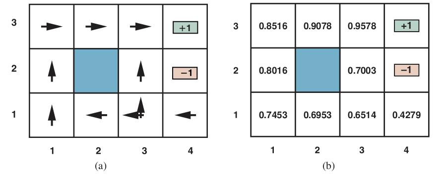
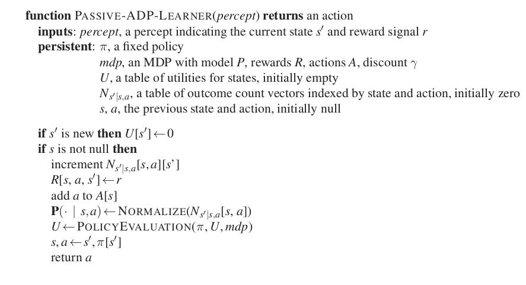
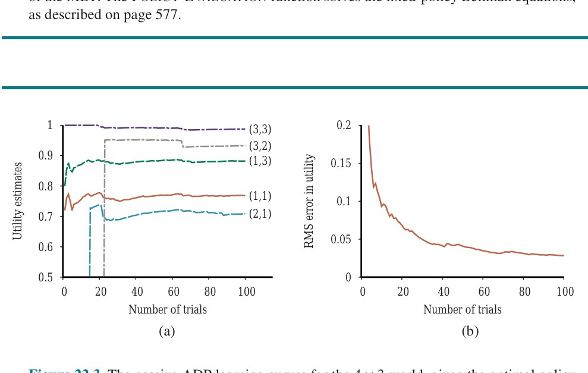
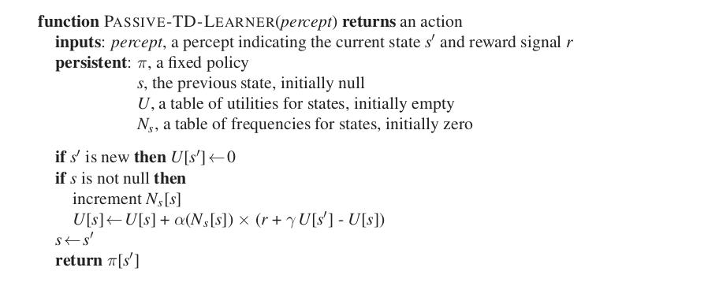
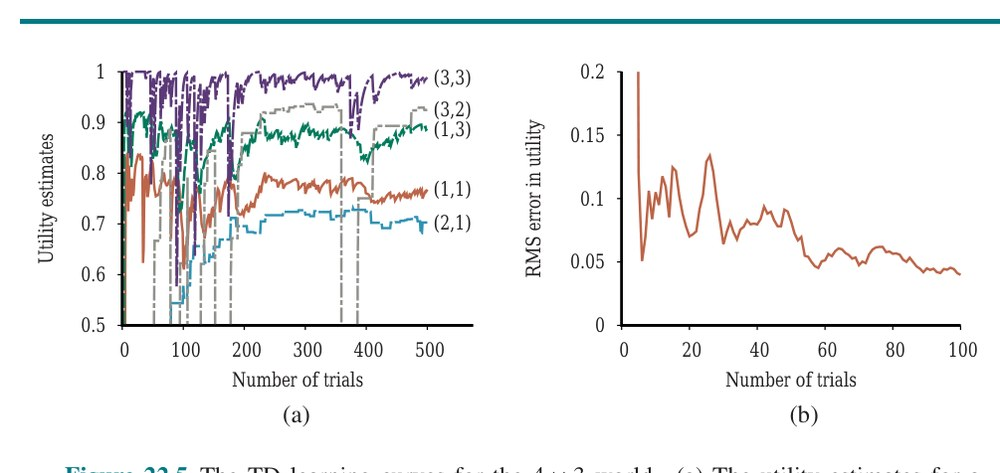
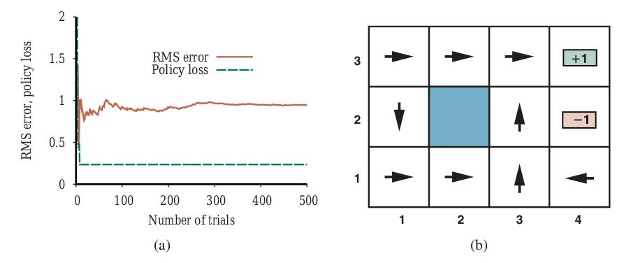
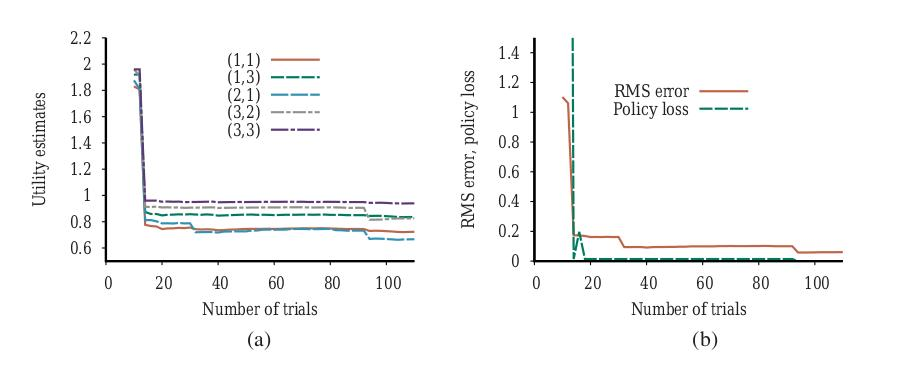
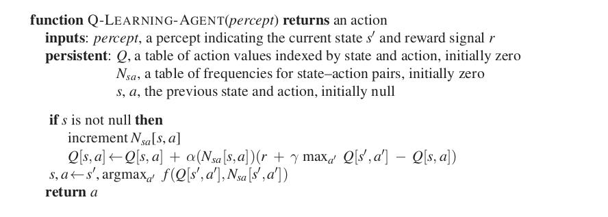
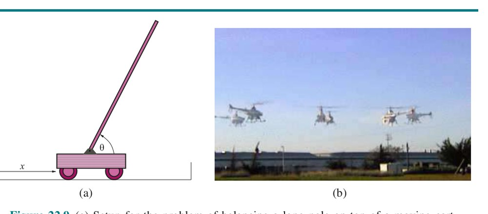

فصل ۲۲: یادگیری تقویتی (Reinforcement Learning)
در یادگیریِ نظارتشده، عامل با مشاهدهٔ منفعلانهٔ جفتهای ورودی/خروجیِ نمونهای که توسط یک «معلم» فراهم شده یاد میگیرد. در این فصل، خواهیم دید چگونه عاملها میتوانند بهطورِ فعال از تجربهٔ خودشان یاد بگیرند، بدونِ معلم، با درنظرگرفتنِ موفقیت یا شکستِ نهاییشان.
مسئلهٔ یادگیریِ بازیِ شطرنج را در نظر بگیرید. بیایید تصور کنیم این را با روشهای فصلهای ۱۹ تا ۲۱ بهعنوانِ مسئلهٔ یادگیریِ نظارتشده در نظر بگیریم. تابعِ عاملِ شطرنجباز موقعیتِ صفحه را بهعنوانِ ورودی میگیرد و حرکتی را برمیگرداند، پس این تابع را با ارائهٔ نمونههایی از موقعیتهای شطرنج، که هر یک با حرکتِ درست برچسب خورده، آموزش میدهیم. حالا، اتفاقاً پایگاههای دادهای از چند میلیون بازیِ استادبزرگان در دسترس داریم، که هر یک دنبالهای از موقعیتها و حرکتهاست. حرکتهای انجامشده توسط برنده، با چند استثنا، خوب فرض میشوند، اگر نه همیشه کامل. پس مجموعهٔ آموزشیِ امیدوارکنندهای داریم. مشکل این است که در مقایسه با فضایِ همهٔ موقعیتهای شطرنجِ ممکن (حدودِ 10⁴⁰)، مثالها نسبتاً کماند (حدودِ 10⁸). در بازیِ تازه، بهزودی با موقعیتهایی روبهرو میشویم که بهطورِ چشمگیری با موقعیتهای پایگاهِ داده متفاوتاند، و تابعِ عاملِ آموزشدیده به احتمالِ زیاد بهشکلِ فاجعهباری شکست میخورد—و نه فقط بهدلیلِ اینکه هیچ ایدهای ندارد حرکتهایش قرار است به چه چیزی برسند (کیشومات) یا حتی حرکتها چه اثری بر موقعیتِ مهرهها دارند. و البته شطرنج بخشِ کوچکی از جهانِ واقعی است. برای مسائلِ واقعبینانهتر، به پایگاههای دادهٔ استادبزرگانِ بسیار وسیعتری نیاز میداشتیم، و آنها بهسادگی وجود ندارند.¹
جایگزین، «یادگیریِ تقویتی» (Reinforcement Learning) است، که در آن عامل با جهان برهمکنش میکند و بهطورِ دورهای «پاداش»هایی (Reward) دریافت میکند (یا، در اصطلاحِ روانشناسی، تقویتهایی) که بازتابِ خوببودنِ عملکردِ اوست. برای نمونه، در شطرنج پاداش برای بردن ۱، برای باختن ۰ و برای مساوی ½ است. مفهومِ پاداشها را قبلاً در فصل ۱۷ برای فرایندهای تصمیمِ مارکوف (MDP) دیدهایم. در واقع، هدف در یادگیریِ تقویتی همان است:
بیشینهکردنِ مجموعِ موردانتظارِ پاداشها.
یادگیریِ تقویتی با «صرفاً حلکردنِ MDP» تفاوت دارد، زیرا MDP بهعنوانِ مسئلهای برای حل به عامل داده نمیشود؛ عامل درونِ MDP است. ممکن است مدلِ انتقال یا تابعِ پاداش را نداند، و برای یادگیریِ بیشتر باید کنش کند. تصور کنید بازیِ تازهای میکنید که قواعدش را نمیدانید؛ پس از حدودِ صد حرکت، داور به شما میگوید «باختی». این یادگیریِ تقویتی در یک جمله است.
از دیدگاهِ ما بهعنوانِ طراحانِ سامانههای هوش مصنوعی، ارائهٔ سیگنالِ پاداش به عامل معمولاً بسیار آسانتر از ارائهٔ مثالهای برچسبخوردهٔ نحوهٔ رفتار است. نخست، تابعِ پاداش اغلب (چنانکه در شطرنج دیدیم) بسیار موجز و ساده برای مشخصکردن است: فقط چند خط کد لازم است تا به عاملِ شطرنج گفته شود برده یا باخته، یا به عاملِ مسابقهٔ اتومبیلرانی گفته شود برده یا باخته یا تصادف کرده. دوم، لازم نیست کارشناس باشیم، توانایِ فراهمکردنِ کنشِ درست در هر موقعیتی، چنانکه اگر بخواهیم یادگیریِ نظارتشده بهکار ببریم چنین میشد. معلوم میشود، با این حال، کمی تخصص میتواند در یادگیریِ تقویتی راهِ زیادی برود.
دو مثالِ پاراگرافِ پیشین—پاداشهای برد/باخت برای شطرنج و مسابقه—چیزیاند که «پاداشِ پراکنده» (Sparse Reward) مینامیم، زیرا در اکثریتِ قریبِ بهاتفاقِ حالتها به عامل هیچ سیگنالِ پاداشِ اطلاعاتیای داده نمیشود. در بازیهایی مانندِ تنیس و کریکت، میتوانیم بهآسانی پاداشهای اضافی برای هر امتیازِ بردهشده یا هر رانِ زدهشده فراهم کنیم. در مسابقهٔ اتومبیلرانی، میتوانستیم عامل را برای پیشرفت در مسیر در جهتِ درست پاداش دهیم. هنگامِ یادگیریِ چهار دست و پا رفتن، هر حرکتِ رو به جلو دستاوردی است. این پاداشهای میانی یادگیری را بسیار آسانتر میکنند. تا زمانی که بتوانیم سیگنالِ پاداشِ درست را به عامل بدهیم، یادگیریِ تقویتی راهِ بسیار کلی برای ساختنِ سامانههای هوش مصنوعی فراهم میکند. این بهویژه برای محیطهای شبیهسازیشده صادق است، که در آنها فرصتِ کسبِ تجربه کم نیست. افزودنِ یادگیری عمیق بهعنوانِ ابزاری در سامانههای RL نیز کاربردهای تازهای را ممکن کرده، از جملهِ یادگیریِ بازیِ بازیهای ویدئوییِ آتاری از ورودیِ بصریِ خام (منیه و همکاران، 2013)، کنترلِ رباتها (لوین و همکاران، 2016)، و بازیِ پوکر (براون و سندهلم، 2017).
بهمعنای واقعیِ کلمه صدها الگوریتمِ یادگیریِ تقویتیِ متفاوت ابداع شده، و بسیاری از آنها میتوانند بهعنوانِ ابزار طیفِ وسیعی از روشهای یادگیریِ فصلهای ۱۹ تا ۲۱ را بهکار برند.
در این فصل، ایدههای بنیادین را پوشش میدهیم و از خلالِ چند مثال حسی از تنوعِ رویکردها میدهیم. رویکردها را بهصورتِ زیر دستهبندی میکنیم:

در بخش ۲۲.۲ با یادگیریِ تقویتیِ منفعل شروع میکنیم، که در آن سیاستِ عامل ثابت است و تکلیف، یادگیریِ مطلوبیتِ حالتها (یا جفتهای حالت-کنش) است؛ این همچنین میتواند شاملِ یادگیریِ مدلی از محیط باشد. (فهمِ فرایندهای تصمیمِ مارکوف، چنانکه در فصل ۱۷ توصیف شد، برای این بخش ضروری است.) بخش ۲۲.۳ یادگیریِ تقویتیِ فعال را پوشش میدهد، که در آن عامل باید همچنین بفهمد چه کند. مسئلهٔ اصلی «کاوش» است: عامل باید تا حدِ ممکن از محیطِ خود تجربه کند تا یاد بگیرد چگونه در آن رفتار کند. بخش ۲۲.۴ بحث میکند عامل چگونه میتواند از یادگیریِ استقرایی (از جملهِ روشهای یادگیری عمیق) برای یادگیریِ بسیار سریعتر از تجربههایش استفاده کند. همچنین رویکردهای دیگری را بحث میکنیم که میتوانند به مقیاسپذیرکردنِ RL برای حلِ مسائلِ واقعی کمک کنند، از جملهِ فراهمکردنِ شبهپاداشهای میانی برای راهنماییِ یادگیرنده و سازماندهیِ رفتار به سلسلهمراتبی از کنشها. بخش ۲۲.۵ روشهای جستجوی سیاست را پوشش میدهد. در بخش ۲۲.۶، یادگیریِ کارآموزی را کاوش میکنیم: آموزشِ عاملِ یادگیرنده با استفاده از نمایشها بهجای سیگنالهای پاداش. سرانجام، بخش ۲۲.۷ کاربردهای یادگیریِ تقویتی را گزارش میدهد.
با حالتِ سادهٔ محیطِ کاملاً مشاهدهپذیر با تعدادِ کمی کنش و حالت شروع میکنیم، که در آن عامل از قبل سیاستِ ثابتِ π(s) دارد که کنشهایش را تعیین میکند.
عامل میکوشد تابعِ مطلوبیتِ U^π(s)—مجموعِ موردانتظارِ کلِ پاداشِ تخفیفخورده اگر سیاستِ π از حالتِ s آغاز شود—را یاد بگیرد. این را «عاملِ یادگیریِ منفعل» (Passive Learning Agent) مینامیم.
تکلیفِ یادگیریِ منفعل شبیهِ تکلیفِ ارزیابیِ سیاست است، بخشی از الگوریتمِ تکرارِ سیاستِ توصیفشده در بخش ۱۷.۲.۲. تفاوت این است که عاملِ یادگیریِ منفعل مدلِ انتقالِ P(s′|s,a) را نمیداند، که احتمالِ رسیدن به حالتِ s′ از حالتِ s پس از انجامِ کنشِ a را مشخص میکند؛ و تابعِ پاداشِ R(s,a,s′) را نیز نمیداند، که پاداشِ هر انتقال را مشخص میکند.
بهعنوانِ مثال از جهانِ ۴×۳ِ معرفیشده در فصل ۱۷ استفاده میکنیم. شکل ۲۲.۱ سیاستهای بهینه را برای آن جهان و مطلوبیتهای متناظر را نشان میدهد. عامل با استفاده از سیاستِ π مجموعهای از «کوشش»ها (Trial) را در محیط اجرا میکند. در هر کوشش، عامل از حالتِ (1,1) شروع میکند و دنبالهای از انتقالِ حالت را تجربه میکند تا به یکی از حالتهای پایانی، (4,2) یا (4,3)، برسد. ادراکهایش هم حالتِ کنونی و هم پاداشِ دریافتی برای انتقالی که تازه برای رسیدن به آن حالت رخ داده فراهم میکنند. کوششهای معمولی ممکن است چنین باشند:
توجه کنید هر انتقال هم با کنشِ انجامشده و هم با پاداشِ دریافتی در حالتِ بعدی حاشیهنویسی شده. هدف استفاده از اطلاعاتِ مربوط به پاداشها برای یادگیریِ مطلوبیتِ موردانتظارِ U^π(s) وابسته به هر حالتِ غیرپایانیِ s است. مطلوبیت بهعنوانِ مجموعِ موردانتظارِ پاداشهای (تخفیفخورده) ای که اگر سیاستِ π دنبال شود بهدست میآید تعریف میشود. چنانکه در معادلهٔ (17.2) در صفحهٔ ۵۶۷، مینویسیم:
U^π(s) = E[∑_{t=0}^{∞} γᵗ R(Sₜ, π(Sₜ), Sₜ₊₁)] (22.1)که در آن R(Sₜ, π(Sₜ), Sₜ₊₁) پاداشِ دریافتی است وقتی کنشِ π(Sₜ) در حالتِ Sₜ گرفته میشود و به حالتِ Sₜ₊₁ میرسد. توجه کنید Sₜ متغیرِ تصادفی است که حالتی را نشان میدهد در زمانِ t هنگامِ اجرایِ سیاستِ π، با شروع از حالتِ S₀ = s، به آن میرسیم. عاملِ تخفیفِ γ را در همهٔ معادلههایمان میگنجانیم، اما برای جهانِ ۴×۳ مقدارِ γ = 1 میگذاریم، که یعنی بدونِ تخفیف.
ایدهٔ «برآوردِ مستقیمِ مطلوبیت» (Direct Utility Estimation) این است که مطلوبیتِ یک حالت بهعنوانِ مجموعِ موردانتظارِ کلِ پاداش از آن حالت به بعد (که «پاداشِ تا-پایان» (Reward-to-Go) نامیده میشود) تعریف میشود، و هر کوشش نمونهای از این کمیت را برای هر حالتِ بازدیدشده فراهم میکند. برای نمونه، نخستینِ سه کوششِ نشاندادهشده در بالا مجموعِ پاداشِ نمونهٔ 0.76 را برای حالتِ (1,1)، دو نمونهٔ 0.80 و 0.88 را برای (1,2)، دو نمونهٔ 0.84 و 0.92 را برای (1,3) و مانندِ آن فراهم میکند. پس، در پایانِ هر دنباله، الگوریتم پاداشِ تا-پایانِ مشاهدهشده را برای هر حالت محاسبه و برآوردِ مطلوبیتِ آن حالت را متناسباً بهروزرسانی میکند، فقط با نگهداشتنِ میانگینِ متحرکی برای هر حالت در جدولی. در حدِ بینهایت کوشش، میانگینِ نمونهای به امیدِ ریاضیِ واقعیِ معادلهٔ (22.1) همگرا میشود.
این بدانمعناست که یادگیریِ تقویتی را به مسئلهٔ یادگیریِ نظارتشدهٔ استانداردی تقلیل دادهایم که در آن هر مثال جفتِ (حالت، پاداشِ تا-پایان) است. الگوریتمهای قدرتمندِ بسیاری برای یادگیریِ نظارتشده داریم، پس این رویکرد امیدوارکننده به نظر میرسد، اما قیدِ مهمی را نادیده میگیرد: مطلوبیتِ یک حالت توسط پاداش و مطلوبیتِ موردانتظارِ حالتهای جانشین تعیین میشود. بهطورِ مشخصتر، مقادیرِ مطلوبیت از «معادلههای بلمن» برای سیاستِ ثابت پیروی میکنند (معادلهٔ (17.14) را نیز ببینید):
Uᵢ(s) = ∑_{s′} P(s′|s, πᵢ(s)) [R(s, πᵢ(s), s′) + γUᵢ(s′)] (22.2)با نادیدهگرفتنِ پیوندهای بینِ حالتها، برآوردِ مستقیمِ مطلوبیت فرصتهای یادگیری را از دست میدهد. برای نمونه، دومینِ سه کوششِ دادهشده در بالا به حالتِ (3,2) میرسد، که قبلاً بازدید نشده. انتقالِ بعدی به (3,3) میرسد، که از کوششِ نخست شناختهشده است مطلوبیتِ بالایی دارد. معادلهٔ بلمن بلافاصله پیشنهاد میکند (3,2) نیز به احتمالِ زیاد مطلوبیتِ بالایی دارد، زیرا به (3,3) میانجامد، اما برآوردِ مستقیمِ مطلوبیت تا پایانِ کوشش هیچچیز یاد نمیگیرد. بهطورِ کلیتر، میتوانیم برآوردِ مستقیمِ مطلوبیت را بهعنوانِ جستجوی U در فضایِ فرضیهای ببینیم که بسیار بزرگتر از آن چیزی است که باید باشد، از آن نظر که توابعِ بسیاری را شامل میشود که معادلههای بلمن را نقض میکنند. به همین دلیل، الگوریتم اغلب بسیار کند همگرا میشود.
«عاملِ برنامهنویسیِ پویایِ تطبیقی» (Adaptive Dynamic Programming یا ADP) از قیدهای موجود در میانِ مطلوبیتهای حالتها بهره میبرد، با یادگیریِ مدلِ انتقالی که آنها را به هم پیوند میدهد و حلِ فرایندِ تصمیمِ مارکوفِ متناظر با برنامهنویسیِ پویا. برای عاملِ یادگیریِ منفعل، این یعنی جایگذاریِ مدلِ انتقالِ آموختهشدهٔ P(s′|s, π(s)) و پاداشهای مشاهدهشدهٔ R(s, π(s), s′) در معادلهٔ (22.2) برای محاسبهٔ مطلوبیتهای حالتها. چنانکه در بحثِ تکرارِ سیاست در فصل ۱۷ اشاره کردیم، وقتی سیاستِ π ثابت است این معادلههای بلمن خطیاند، پس میتوان آنها را با هر بستهٔ جبرِ خطی حل کرد.
جایگزین، میتوانیم رویکردِ تکرارِ سیاستِ اصلاحشده را برگزینیم (صفحهٔ ۵۷۸ را ببینید)، با استفاده از فرایندِ سادهشدهٔ تکرارِ ارزش برای بهروزرسانیِ برآوردهای مطلوبیت پس از هر تغییرِ مدلِ آموختهشده. چون مدل معمولاً با هر مشاهده فقط کمی تغییر میکند، فرایندِ تکرارِ ارزش میتواند از برآوردهای مطلوبیتِ قبلی بهعنوانِ مقادیرِ اولیه استفاده کند و معمولاً خیلی سریع همگرا میشود. یادگیریِ مدلِ انتقال آسان است، زیرا محیط کاملاً مشاهدهپذیر است. این بدانمعناست که تکلیفِ یادگیریِ نظارتشدهای داریم که ورودیِ هر مثالِ آموزشی جفتِ حالت-کنشِ (s,a) و خروجی حالتِ حاصل، s′، است. مدلِ انتقالِ P(s′|s,a) بهصورتِ جدولی بازنمایی و مستقیماً از شمارشهای انباشتهشده در N_{s′|sa} برآورد میشود. شمارشها ثبت میکنند حالتِ s′ چند بار هنگامِ اجرایِ a در s بهدست میآید. برای نمونه، در سه کوششِ دادهشده در صفحهٔ ۷۹۲، «راست» چهار بار در (3,3) اجرا میشود و حالتِ حاصل دو بار (3,2) و دو بار (4,3) است، پس P((3,2)|(3,3), راست) و P((4,3)|(3,3), راست) هر دو ½ برآورد میشوند.
برنامهٔ کاملِ عاملِ ADPِ منفعل در شکل ۲۲.۲ نشان داده شده. عملکردش رویِ جهانِ ۴×۳ در شکل ۲۲.۳ نشان داده شده. از نظرِ سرعتی که برآوردهای ارزشاش بهبود مییابند، عاملِ ADP فقط با تواناییاش در یادگیریِ مدلِ انتقال محدود میشود. از این نظر، معیاری فراهم میکند که هر الگوریتمِ یادگیریِ تقویتیِ دیگری را میتوان با آن سنجید. اما برای فضاهای حالتِ بزرگ محاسبهناپذیر است. در بازیِ تختهنرد، برای نمونه، حلِ تقریباً 10²⁰ معادله در 10²⁰ مجهول را دربرمیگرفت.


حلِ MDPِ زیرین مانندِ بخشِ پیشین تنها راهِ بهکاربردنِ معادلههای بلمن بر مسئلهٔ یادگیری نیست. راهِ دیگر استفاده از انتقالهای مشاهدهشده برای تنظیمِ مطلوبیتهای حالتهای مشاهدهشده است تا با معادلههای قید موافقت کنند. برای نمونه، انتقال از (1,3) به (2,3) در دومین کوششِ صفحهٔ ۷۹۲ را در نظر بگیرید. فرض کنید در نتیجهٔ کوششِ نخست، برآوردهای مطلوبیت U^π(1,3) = 0.88 و U^π(2,3) = 0.96 باشند. حالا، اگر این انتقال از (1,3) به (2,3) همیشه رخ میداد، انتظار داشتیم مطلوبیتها از معادلهٔ U^π(1,3) = −0.04 + U^π(2,3) پیروی کنند، پس U^π(1,3) برابرِ 0.92 میشد. پس، برآوردِ کنونیِ 0.84 ممکن است کمی پایین باشد و باید افزایش یابد.
بهطورِ کلیتر، وقتی انتقالی از حالتِ s به حالتِ s′ از طریقِ کنشِ π(s) رخ میدهد، بهروزرسانیِ زیر را بر U^π(s) اعمال میکنیم:
U^π(s) ← U^π(s) + α[R(s, π(s), s′) + γU^π(s′) − U^π(s)] (22.3)در اینجا، α پارامترِ نرخِ یادگیری است. چون این قاعدهٔ بهروزرسانی از تفاوتِ مطلوبیتهای بینِ حالتهای متوالی (و در نتیجهِ زمانهای متوالی) استفاده میکند، اغلب «معادلهٔ تفاضلِ زمانی» (Temporal-Difference یا TD) نامیده میشود. درست مانندِ قاعدههای بهروزرسانیِ وزنِ فصل ۱۹ (مثلاً معادلهٔ (19.6) در صفحهٔ ۶۸۰)، عبارتِ TD یعنی R(s, π(s), s′) + γU^π(s′) − U^π(s)، بهطورِ مؤثر سیگنالِ خطاست، و بهروزرسانی برای کاهشِ خطا در نظر گرفته شده.
همهٔ روشهای تفاضلِ زمانی با تنظیمِ برآوردهای مطلوبیت به سمتِ تعادلِ ایدهآلی کار میکنند که بهصورتِ محلی وقتی برآوردهای مطلوبیت درستاند برقرار است. در موردِ یادگیریِ منفعل، تعادل توسط معادلهٔ (22.2) داده میشود. حالا معادلهٔ (22.3) در واقع باعث میشود عامل به تعادلِ دادهشده توسط معادلهٔ (22.2) برسد، اما ظرافتی در کار است. نخست، توجه کنید بهروزرسانی فقط جانشینِ مشاهدهشدهٔ s′ را دربرمیگیرد، در حالی که شرایطِ تعادلِ واقعی همهٔ حالتهای بعدیِ ممکن را دربرمیگیرد. ممکن است کسی فکر کند این وقتی انتقالِ بسیار نادری رخ میدهد باعث تغییرِ نابهجایِ بزرگی در U^π(s) میشود؛ اما، در واقع، چون انتقالهای نادر بهندرت رخ میدهند، مقدارِ میانگینِ U^π(s) در حد به کمیتِ درست همگرا خواهد شد، حتی اگر خودِ مقدار به نوسان ادامه دهد.
افزون بر این، اگر پارامترِ α را به تابعی تبدیل کنیم که با افزایشِ تعدادِ دفعاتِ بازدیدِ یک حالت کاهش مییابد، چنانکه در شکل ۲۲.۴ نشان داده شده، آنگاه خودِ U^π(s) به مقدارِ درست همگرا خواهد شد.³


به همان سرعتی که عاملِ ADP یاد نمیگیرد و تغییرپذیریِ بسیار بالاتری نشان میدهد، اما بسیار سادهتر است و به محاسبهٔ بسیار کمتری در هر مشاهده نیاز دارد.
توجه کنید TD برای انجامِ بهروزرسانیهایش به مدلِ انتقال نیاز ندارد. خودِ محیط پیوندِ بینِ حالتهای مجاور را در قالبِ انتقالهای مشاهدهشده فراهم میکند.
رویکردهای ADP و TD بههمپیوستهاند. هر دو میکوشند تنظیماتِ محلیِ برآوردهای مطلوبیت را انجام دهند تا هر حالت با جانشینهایش «موافقت کند». یک تفاوت این است که TD حالتی را تنظیم میکند تا با جانشینِ مشاهدهشدهاش موافقت کند (معادلهٔ (22.3))، در حالی که ADP حالت را تنظیم میکند تا با همهٔ جانشینهایی که ممکن است رخ دهند، وزنخورده با احتمالهایشان، موافقت کند (معادلهٔ (22.2)). این تفاوت وقتی اثرهای تنظیماتِ TD رویِ تعدادِ زیادی انتقال میانگین گرفته شود ناپدید میشود، زیرا بسامدِ هر جانشین در مجموعهٔ انتقالها تقریباً متناسب با احتمالِ آن است. تفاوتِ مهمتر این است که TD بهازایِ هر انتقالِ مشاهدهشده یک تنظیمِ واحد انجام میدهد، در حالی که ADP هرچند تنظیمی که لازم باشد انجام میدهد تا سازگاریِ بینِ برآوردهای مطلوبیتِ U و مدلِ انتقالِ P بازگردانده شود. هرچند انتقالِ مشاهدهشده فقط تغییرِ محلیِ P ایجاد میکند، اثرهایش ممکن است لازم باشد در سراسرِ U منتشر شوند. پس، TD را میتوان تقریبِ درشت اما کارآمدِ نخستِ ADP دید. هر تنظیمِ انجامشده توسط ADP را میتوان، از دیدگاهِ TD، نتیجهٔ «شبهتجربه»ای (Pseudoexperience) دید که با شبیهسازیِ مدلِ انتقالِ کنونی تولید شده. امکانِ بسطِ رویکردِ TD برای استفاده از مدلِ انتقال برای تولیدِ چند شبهتجربه—انتقالهایی که عاملِ TD میتواند تصور کند ممکن است رخ دهند، با توجه به مدلِ کنونیاش—هست. برای هر انتقالِ مشاهدهشده، عاملِ TD میتواند تعدادِ زیادی انتقالِ خیالی تولید کند. به اینشیوه، برآوردهای مطلوبیتِ حاصل بیشتر و بیشتر به برآوردهای ADP نزدیک میشوند—البته، به بهایِ افزایشِ زمانِ محاسبه.
در همین راستا، میتوانیم نسخههای کارآمدتری از ADP با تقریبِ مستقیمِ الگوریتمهای تکرارِ ارزش یا تکرارِ سیاست تولید کنیم. حتی اگر الگوریتمِ تکرارِ ارزش کارآمد باشد، اگر مثلاً 10¹⁰⁰ حالت داشته باشیم محاسبهناپذیر است. با این حال، بسیاری از تنظیماتِ لازمِ مقادیرِ حالت در هر تکرار بسیار ریز خواهند بود. یک رویکردِ ممکن برای تولیدِ سریعِ پاسخهای بهاندازهٔ کافی خوب، کرانکردنِ تعدادِ تنظیماتِ انجامشده پس از هر انتقالِ مشاهدهشده است. همچنین میتوان از اکتشافی برای رتبهبندیِ تنظیماتِ ممکن استفاده کرد تا فقط مهمترینها اجرا شوند. اکتشافیِ «جاروبِ اولویتدار» (Prioritized Sweeping) ترجیح میدهد تنظیماتی را بر حالتهایی انجام دهد که جانشینهای محتملِ آنها تازه در برآوردهای مطلوبیتِ خودشان تنظیمِ بزرگی را تجربه کردهاند.
با استفاده از اینگونه اکتشافیها، الگوریتمهای تقریبیِ ADP میتوانند تقریباً به همان سرعتِ ADPِ کامل، از نظرِ تعدادِ دنبالههای آموزشی، یاد بگیرند، اما از نظرِ محاسبهٔ کل میتوانند مرتبههای بزرگی کارآمدتر باشند (تمرین ۲۲.PRSW را ببینید). این آنها را قادر میکند فضاهای حالتی را مدیریت کنند که برای ADPِ کامل بسیار بزرگاند. الگوریتمهای تقریبیِ ADP مزیتِ اضافیای نیز دارند: در مراحلِ اولیهٔ یادگیریِ محیطِ تازه، مدلِ انتقالِ P اغلب از درستبودن بسیار دور است، پس فایدهای در محاسبهٔ تابعِ مطلوبیتِ دقیق برای مطابقت با آن نیست. الگوریتمِ تقریبی میتواند از اندازهٔ حداقلِ تنظیمی استفاده کند که با دقیقترشدنِ مدلِ انتقال کاهش مییابد. این اجراهای بسیار طولانیِ تکرارِ ارزش را که ممکن است اوایلِ یادگیری بهدلیلِ تغییراتِ بزرگِ مدل رخ دهند حذف میکند.
عاملِ یادگیریِ منفعل سیاستِ ثابتی دارد که رفتارش را تعیین میکند. عاملِ یادگیریِ فعال میتواند تصمیم بگیرد چه کنشهایی انجام دهد. با عاملِ برنامهنویسیِ پویایِ تطبیقی (ADP) شروع میکنیم و بررسی میکنیم چگونه میتوان آن را برای بهرهگیری از این آزادیِ تازه اصلاح کرد.
نخست، عامل باید مدلِ انتقالِ کاملی را با احتمالهای پیامد برای همهٔ کنشها یاد بگیرد، نه فقط مدلِ سیاستِ ثابت. سازوکارِ یادگیریِ استفادهشده توسط PASSIVE-ADP-AGENT برای این کار کاملاً کافی خواهد بود. بعد، باید این واقعیت را در نظر بگیریم که عامل انتخابِ کنشها را دارد. مطلوبیتهایی که باید یاد بگیرد آنهاییاند که توسط سیاستِ بهینه تعریف میشوند؛ آنها از معادلههای بلمن پیروی میکنند (که در اینجا تکرار میکنیم):
U(s) = max_{a∈A(s)} ∑_{s′} P(s′|s,a) [R(s,a,s′) + γU(s′)] (22.4)این معادلهها را میتوان با الگوریتمهای تکرارِ ارزش یا تکرارِ سیاستِ فصل ۱۷ حل کرد تا تابعِ مطلوبیتِ U بهدست آید.
مسئلهٔ نهایی این است که در هر گام چه کنیم. پس از بهدستآوردنِ تابعِ مطلوبیتِ U که برای مدلِ آموختهشده بهینه است، عامل میتواند کنشِ بهینه را با نگاه-به-جلوِ تکگامی برای بیشینهکردنِ مطلوبیتِ موردانتظار استخراج کند؛ یا اگر از تکرارِ سیاست استفاده کند، سیاستِ بهینه از قبل در دسترس است، پس میتواند صرفاً کنشی را که سیاستِ بهینه توصیه میکند اجرا کند. اما آیا باید؟
شکل ۲۲.۶ نتایجِ یک دنباله از کوششها را برای عاملِ ADP نشان میدهد که در هر گام توصیهٔ سیاستِ بهینه برای مدلِ آموختهشده را دنبال میکند. عامل مطلوبیتهای واقعی یا سیاستِ بهینهٔ واقعی را یاد نمیگیرد! آنچه در عوض رخ میدهد این است که در کوششِ سوم، سیاستی مییابد که از مسیرِ پایینی از طریقِ (2,1)، (3,1)، (3,2) و (3,3) به پاداشِ +1 میرسد. (شکل ۲۲.۶ (ب) را ببینید.) پس از آزمایشِ تغییرهای جزئی، از کوششِ هشتم به بعد به همان سیاست میچسبد، و هرگز مطلوبیتِ حالتهای دیگر را یاد نمیگیرد و هرگز مسیرِ بهینهٔ از طریقِ (1,2)، (1,3) و (2,3) را نمییابد. این عامل را «عاملِ حریص» (Greedy Agent) مینامیم، زیرا در هر گام حریصانه کنشی را انجام میدهد که در حالِ حاضر باور دارد بهینه است. گاهی طمع جواب میدهد و عامل به سیاستِ بهینه همگرا میشود، اما اغلب نمیشود.
چگونه ممکن است انتخابِ کنشِ بهینه به نتایجِ زیربهینه بینجامد؟ پاسخ این است که مدلِ آموختهشده با محیطِ واقعی یکی نیست؛ آنچه در مدلِ آموختهشده بهینه است بنابراین میتواند در محیطِ واقعی زیربهینه باشد. متأسفانه، عامل نمیداند محیطِ واقعی چیست، پس نمیتواند کنشِ بهینه را برای محیطِ واقعی محاسبه کند. پس، چه باید بکند؟

عاملِ حریص این واقعیت را نادیده گرفته که کنشها بیش از فراهمکردنِ پاداش کار میکنند؛ آنها همچنین در قالبِ ادراکهای حالتهای حاصل، اطلاعات فراهم میکنند. چنانکه با مسئلههای باندیت در بخش ۱۷.۳ دیدیم، عامل باید مبادلهای بینِ «بهرهبرداری» (Exploitation) از بهترین کنشِ کنونی برای بیشینهکردنِ پاداشِ کوتاهمدتش و «کاوش» (Exploration) حالتهای قبلاً ناشناخته برای کسبِ اطلاعاتی که میتواند به تغییرِ سیاست (و به پاداشهای بیشتر در آینده) بینجامد انجام دهد. در جهانِ واقعی، انسان دائماً باید بینِ ادامهٔ یک زندگیِ راحت در برابرِ زدن به ناشناختهها به امیدِ زندگیِ بهتر تصمیم بگیرد.
هرچند مسئلههای باندیت برای بهدستآوردنِ طرحِ کاوشِ بهینه دقیقاً حلکردنی دشوارند، با این حال ممکن است طرحی ارائه شود که در نهایت سیاستِ بهینه را کشف کند، حتی اگر انجامش ممکن است بیشتر از حدِ بهینه طول بکشد. هر طرحِ چنینی نباید از نظرِ حرکتِ بیواسطهٔ بعدی حریص باشد، بلکه باید آنچه «حریص در حدِ کاوشِ بینهایت» یا GLIE نامیده میشود باشد. طرحِ GLIE باید هر کنش را در هر حالت تعدادِ نامحدودی بار امتحان کند تا از احتمالِ متناهیِ ازدسترفتنِ کنشِ بهینه اجتناب شود. عاملِ ADP با استفاده از چنین طرحی در نهایت مدلِ انتقالِ واقعی را یاد میگیرد و سپس میتواند تحتِ بهرهبرداری عمل کند.
چند طرحِ GLIE هست؛ یکی از سادهترینها این است که عامل در گامِ زمانیِ t با احتمالِ 1/t کنشِ تصادفی انتخاب کند و در غیرِ این صورت سیاستِ حریص را دنبال کند. هرچند این در نهایت به سیاستِ بهینه همگرا میشود، میتواند کند باشد. رویکردِ بهتر به کنشهایی که عامل چند بار امتحان نکرده وزنی میدهد، در حالی که تمایل به اجتناب از کنشهایی دارد که باور میشود مطلوبیتِ پایینی دارند (چنانکه با جستجوی درختِ مونتکارلو در بخش ۵.۴ انجام دادیم).
این را میتوان با تغییرِ معادلهٔ قید (۲۲.۴) پیادهسازی کرد تا به جفتهای حالت-کنشِ نسبتاً کاوشنشده برآوردِ مطلوبیتِ بالاتری تخصیص دهد. این بهمعنای پیشینِ خوشبینانهای بر محیطهای ممکن است و باعث میشود عامل در آغاز طوری رفتار کند که گویی پاداشهای شگفتانگیزی همهجا پراکندهاند. با U⁺(s) برآوردِ خوشبینانهٔ مطلوبیت (یعنی پاداشِ موردانتظارِ تا-پایان) حالتِ s را نشان میدهیم، و با N(s,a) تعدادِ دفعاتی را که کنشِ a در حالتِ s امتحان شده. فرض کنید در عاملِ یادگیریِ ADP از تکرارِ ارزش استفاده میکنیم؛ پس باید معادلهٔ بهروزرسانی (معادلهٔ (17.10) در صفحهٔ ۵۷۳) را بازنویسی کنیم تا برآوردِ خوشبینانه را لحاظ کند:
U⁺(s) ← max_a f(∑_{s′} P(s′|s,a) [R(s,a,s′) + γU⁺(s′)], N(s,a)) (22.5)در اینجا، f «تابعِ کاوش» (Exploration Function) است. تابعِ f(u,n) تعیین میکند چگونه حرص (ترجیحِ مقادیرِ بالایِ مطلوبیتِ u) با کنجکاوی (ترجیحِ کنشهایی که چند بار امتحان نشدهاند و شمارشِ nِ پایینی دارند) مبادله میشود. تابع باید در u صعودی و در n نزولی باشد. واضح است که توابعِ ممکنِ بسیاری این شرایط را برآورده میکنند. یکی از تعریفهای بهویژه ساده این است:
f(u, n) = R⁺ اگر n < Nₑ، در غیر این صورت uکه در آن R⁺ برآوردِ خوشبینانه از بهترین پاداشِ ممکنِ بهدستآوردنی در هر حالت و Nₑ پارامترِ ثابتی است. این اثر را خواهد داشت که عامل هر جفتِ حالت-کنش را دستِکم Nₑ بار امتحان کند. این واقعیت که بهجای U، U⁺ در سمتِ راستِ معادلهٔ (22.5) ظاهر میشود بسیار مهم است. با پیشرفتِ کاوش، حالتها و کنشهای نزدیکِ حالتِ شروع ممکن است تعدادِ زیادی بار امتحان شوند. اگر از U، برآوردِ بدبینانهترِ مطلوبیت، استفاده میکردیم، عامل بهزودی از کاوشِ فراترِ مناطقِ دوردست دلسرد میشد. استفاده از U⁺ به این معناست که مزیتهای کاوش از لبههای مناطقِ کاوشنشده به عقب منتشر میشوند، تا کنشهایی که به سمتِ مناطقِ کاوشنشده میروند وزندارتر شوند، نه فقط کنشهایی که خودشان ناآشنا هستند.

اثرِ این سیاستِ کاوش را میتوان بهوضوح در شکل ۲۲.۷ (ب) دید، که برخلافِ رویکردِ حریص، همگراییِ سریعی به سمتِ زیانِ سیاستِ صفر نشان میدهد. سیاستِ تقریباً بهینه فقط پس از ۱۸ کوشش یافت میشود. توجه کنید خطایِ RMS در برآوردهای مطلوبیت به همان سرعت همگرا نمیشود. این بهدلیلِ آن است که عامل کاوشِ بخشهای بیپاداشِ فضایِ حالت را بهزودی متوقف میکند و پس از آن فقط «تصادفاً» از آنها بازدید میکند. با این حال، کاملاً منطقی است که عامل به مطلوبیتِ دقیقِ حالتهایی که میداند نامطلوباند و میتوان از آنها اجتناب کرد اهمیت ندهد. فایدهٔ چندانی در یادگیریِ بهترین ایستگاهِ رادیویی برای گوشدادن در حالی که از صخره سقوط میکنید نیست.
تاکنون فرض کردهایم عامل در کاوش هرطور که میخواهد آزاد است—که هر پاداشِ منفی فقط برای بهبودِ مدلِ جهانِ او عمل میکند. یعنی، اگر بازیِ شطرنجی ببازیم، هیچ آسیبی نمیبینیم (بهجز شاید به غرورمان)، و هرچه یاد گرفتهایم در بازیِ بعدی بازیکنِ بهتریمان میکند. بههمینسان، در محیطِ شبیهسازیِ خودرویِ خودران، میتوانستیم حدهای عملکردِ خودرو را کاوش کنیم، و هر تصادفی اطلاعاتِ بیشتری به ما میدهد. اگر خودرو تصادف کند، فقط دکمهٔ بازنشانی را میزنیم.
متأسفانه، جهانِ واقعی کمتر گذشتکننده است. اگر بچهماهیِ خورشیدماهی باشید، احتمالِ زندهماندنِ شما تا بزرگسالی حدودِ 0.00000001 است. بسیاری از کنشها برگشتناپذیرند، به معنایی که برای عاملهای جستجویِ برخط در بخش ۴.۵ تعریف شد: هیچ دنبالهٔ بعدی از کنشها نمیتواند حالت را به آنچه پیش از برداشتنِ کنشِ برگشتناپذیر بود بازگرداند. در بدترین حالت، عامل وارد «حالتِ جذبی» (Absorbing State) میشود که در آن هیچ کنشی اثری ندارد و هیچ پاداشی دریافت نمیشود.
در بسیاری از محیطهای عملی، نمیتوانیم اجازه دهیم عاملهایمان کنشهای برگشتناپذیر بردارند یا وارد حالتهای جذبی شوند. برای نمونه، عاملی که در خودرویِ واقعی رانندگی یاد میگیرد باید از کنشهایی اجتناب کند که ممکن است به هر یک از مواردِ زیر بینجامند:
میتوانیم به حالتِ بدی برسیم یا بهدلیلِ اینکه مدلمان ناشناخته است و فعالانه انتخاب میکنیم در جهتی کاوش کنیم که معلوم میشود بد است، یا بهدلیلِ اینکه مدلمان نادرست است و نمیدانیم کنشِ دادهشدهای میتواند نتیجهٔ فاجعهباری داشته باشد. توجه کنید الگوریتمِ شکل ۲۲.۲ از برآوردِ حداکثرِ درستنمایی (فصل ۲۰ را ببینید) برای یادگیریِ مدلِ انتقال استفاده میکند؛ افزون بر این، با انتخابِ سیاستی که صرفاً بر مدلِ برآوردشده مبتنی است، طوری رفتار میکند که گویی مدل درست است. این لزوماً ایدهٔ خوبی نیست! برای نمونه، عاملِ تاکسی که نمیداند چراغهای راهنمایی چگونه کار میکنند ممکن است یک یا دو بار چراغِ قرمز را بدونِ اثرِ بد نادیده بگیرد و سپس سیاستی صورتبندی کند که از آن به بعد همهٔ چراغهای قرمز را نادیده بگیرد.
ایدهٔ بهتر انتخابِ سیاستی است که برای کلِ دامنهٔ مدلهایی که شانسِ معقولی برای مدلِ واقعیبودن دارند بهاندازهٔ کافی خوب کار کند، حتی اگر سیاستِ مذکور برای مدلِ حداکثرِ درستنمایی اتفاقاً زیربهینه باشد. سه رویکردِ ریاضی هست که این حال وهوا را دارند.
رویکردِ نخست، «یادگیریِ تقویتیِ بیزی» (Bayesian Reinforcement Learning)، احتمالِ پیشینِ P(h) را بر فرضیههای h دربارهٔ مدلِ واقعیبودنِ چه فرض میکند؛ احتمالِ پسینِ P(h|e) بهشیوهٔ معمول با قاعدهٔ بیز با توجه به مشاهدههای تاکنون بهدست میآید. سپس، اگر عامل تصمیم گرفته باشد یادگیری را متوقف کند، سیاستِ بهینه آن سیاستی است که بیشترین مطلوبیتِ موردانتظار را میدهد. U^π_h مطلوبیتِ موردانتظار، میانگینشده رویِ همهٔ حالتهای شروعِ ممکن، حاصل از اجرایِ سیاستِ π در مدلِ h باشد. آنگاه داریم:
π* = argmax_π ∑_h P(h|e) U^π_hدر برخی حالتهای خاص، این سیاست حتی قابلِ محاسبه است! اما اگر عامل در آینده به یادگیری ادامه دهد، یافتنِ سیاستِ بهینه بهطورِ چشمگیری دشوارتر میشود، زیرا عامل باید اثرهای مشاهدههای آینده را بر باورهایش دربارهٔ مدلِ انتقال در نظر بگیرد. مسئله به «POMDP کاوش» (Exploration POMDP) تبدیل میشود که حالتهای باورِ آن توزیعهایی بر مدلها هستند. در اصل، این POMDP کاوش را میتوان پیش از آنکه عامل هرگز پا در جهان بگذارد صورتبندی و حل کرد. (تمرین ۲۲.EPOM از شما میخواهد این کار را برای بازیِ مینروب برای یافتنِ بهترین حرکتِ نخست انجام دهید.) نتیجه راهبردِ کاملی است که به عامل میگوید با توجه به هر دنبالهٔ ادراکِ ممکن بعد چه کند. حلِ POMDP کاوش معمولاً بهشدت محاسبهناپذیر است، اما این مفهوم بنیانِ تحلیلی برای فهمِ مسئلهٔ کاوشِ توصیفشده در بخش ۲۲.۳ فراهم میکند.
شایانِ توجه است که بیزیِ کاملبودن عامل را از مرگِ زودهنگام محافظت نمیکند. مگر اینکه پیشین نشانهای از ادراکهایی بدهد که خطر را پیشنهاد میکنند، هیچچیز مانعِ برداشتنِ کنشِ کاوشیِ منجر به حالتِ جذبی توسط عامل نیست. برای نمونه، قبلاً تصور میشد نوزادانِ انسان ترسِ فطری از ارتفاع دارند و از صخره چهار دست و پا نمیروند، اما معلوم شده این درست نیست (آدولف و همکاران، 2014).
رویکردِ دوم، برگرفته از «نظریهٔ کنترلِ مقاوم» (Robust Control Theory)، مجموعهٔ مدلهای ممکنِ H را بدونِ تخصیصِ احتمال به آنها مجاز میکند، و سیاستِ مقاومِ بهینه را سیاستی تعریف میکند که بهترین پیامد را در بدترین حالت رویِ H میدهد:
π* = argmax_π min_h U^π_hاغلب، مجموعهٔ H مجموعهٔ مدلهایی خواهد بود که از آستانهٔ درستنماییِ مشخصی رویِ P(h|e) فراتر میروند، پس رویکردهای مقاوم و بیزی به هم مربوطاند.
رویکردِ کنترلِ مقاوم را میتوان بازی بینِ عامل و حریفی در نظر گرفت، که حریف برای هر کنش بدترین نتیجهٔ ممکن را انتخاب میکند، و سیاستی که بهدست میآوریم راهحلِ مینیمکس برای بازی است. عاملِ منطقیِ وومپوسِ ما (بخش ۷.۷ را ببینید) از این نظر عاملِ کنترلِ مقاوم است: همهٔ مدلهایی را که از نظرِ منطقی ممکناند در نظر میگیرد، و هیچ مکانِی را که بهطورِ بالقوه میتواند چاله یا وومپوس داشته باشد کاوش نمیکند، پس کنشی را با حداکثرِ مطلوبیت در بدترین حالت رویِ همهٔ فرضیههای ممکن مییابد.
مشکلِ فرضِ بدترینحالت این است که به رفتارِ بیشازحد محافظهکارانه میانجامد. خودرویِ خودرانی که فرض میکند هر رانندهٔ دیگری تلاش خواهد کرد با آن برخورد کند چارهای جز ماندن در گاراژ ندارد. زندگیِ واقعی پر از چنین مبادلههای ریسک-پاداشی است.
هرچند یکی از دلایلِ پاگذاشتن به یادگیریِ تقویتی گریز از نیاز به معلمِ انسانی (مانندِ یادگیریِ نظارتشده) بود، معلوم میشود دانشِ انسانی میتواند به ایمننگهداشتنِ سامانه کمک کند. یک راه ثبتِ دنبالهای از کنشهای معلمِ باتجربه است، تا سامانه از آغاز معقولانه رفتار کند و بتواند از آن نقطه بهبود را یاد بگیرد. راهِ دوم این است که انسان قیدهایی دربارهٔ آنچه سامانه میتواند انجام دهد بنویسد، و برنامهای خارج از سامانهٔ یادگیریِ تقویتی آن قیدها را اعمال کند. برای نمونه، هنگامِ آموزشِ هلیکوپترِ خودمختار، میتوان سیاستِ جزئیای فراهم کرد که وقتی هلیکوپتر وارد حالتی میشود که هر کنشِ ناایمنِ بعدی به حالتِ بازیابیناپذیر منجر شود—حالتی که کنترلگرِ ایمنی نمیتواند تضمین کند از حالتِ جذبی اجتناب خواهد شد—کنترل را به دست میگیرد. در همهٔ حالتهای دیگر، عاملِ یادگیرنده آزاد است هرچه میخواهد بکند.
حالا که عاملِ ADPِ فعال داریم، بیایید بررسی کنیم چگونه عاملِ یادگیریِ تفاضلِ زمانی (TD) فعال بسازیم. آشکارترین تغییر این است که عامل باید مدلِ انتقالی یاد بگیرد تا بتواند بر اساسِ U(s) از طریقِ نگاه-به-جلوِ تکگامی کنش انتخاب کند. مسئلهٔ اکتسابِ مدل برای عاملِ TD همان مسئله برای عاملِ ADP است، و قاعدهٔ بهروزرسانیِ TD بدونِ تغییر میماند. یک بار دیگر، میتوان نشان داد الگوریتمِ TD به همان مقادیرِ ADP همگرا میشود، وقتی تعدادِ دنبالههای آموزشی به بینهایت میل کند.
روشِ کیو-یادگیری از نیاز به مدل با یادگیریِ تابعِ کنش-مطلوبیتِ Q(s,a) بهجای تابعِ مطلوبیتِ U(s) اجتناب میکند. Q(s,a) مجموعِ موردانتظارِ کلِ پاداشِ تخفیفخورده را نشان میدهد اگر عامل در s کنشِ a را بگیرد و پس از آن بهصورتِ بهینه عمل کند. دانستنِ تابعِ Q عامل را قادر میکند بهصورتِ بهینه عمل کند، صرفاً با انتخابِ argmax_a Q(s,a)، بدونِ نیاز به نگاه-به-جلو بر مبنای مدلِ انتقال. همچنین میتوانیم بهروزرسانیِ TDِ بدونِ مدل را برای مقادیرِ Q اشتقاق دهیم. با معادلهٔ بلمن برای Q(s,a) شروع میکنیم، که از معادلهٔ (17.8) در اینجا تکرار میشود:
Q(s,a) = ∑_{s′} P(s′|s,a) [R(s,a,s′) + γ max_{a′} Q(s′,a′)] (22.6)از این، میتوانیم بهروزرسانیِ TDِ کیو-یادگیری را بنویسیم، با قیاس با بهروزرسانیِ TD برای مطلوبیتها در معادلهٔ (22.3):
Q(s,a) ← Q(s,a) + α[R(s,a,s′) + γ max_{a′} Q(s′,a′) − Q(s,a)] (22.7)این بهروزرسانی هر بار که کنشِ a در حالتِ s اجرا میشود و به حالتِ s′ میانجامد محاسبه میشود. مانندِ معادلهٔ (22.3)، عبارتِ R(s,a,s′) + γ max_{a′} Q(s′,a′) − Q(s,a) خطایی را بازنمایی میکند که بهروزرسانی میکوشد کمینه کند. بخشِ مهمِ این معادله چیزی است که شاملِ آن نیست: عاملِ TDِ کیو-یادگیری نه برای یادگیری و نه برای انتخابِ کنش به مدلِ انتقالِ P(s′|s,a) نیاز ندارد. چنانکه در آغازِ فصل اشاره شد، روشهای بدونِ مدل را میتوان حتی در حوزههای بسیار پیچیده بهکار برد، زیرا هیچ مدلی نیاز به ارائه یا یادگیری ندارد. از سوی دیگر، عاملِ کیو-یادگیری هیچ وسیلهای برای نگاهکردن به آینده ندارد، پس ممکن است وقتی پاداشها پراکندهاند و باید دنبالههای کنشِ بلندی برای رسیدن به آنها ساخته شود دچار مشکل شود.
طراحیِ کاملِ عامل برای عاملِ TDِ کیو-یادگیریِ کاوشگر در شکل ۲۲.۸ نشان داده شده. توجه کنید دقیقاً از همان تابعِ کاوشِ f استفاده میکند که عاملِ ADPِ کاوشگر استفاده میکرد—از این رو نیاز به نگهداشتنِ آمارِ کنشهای انجامشده (جدولِ N). اگر سیاستِ کاوشِ سادهتری استفاده شود—مثلاً عملِ تصادفی در کسری از گامها، که در آن کسر در طولِ زمان کاهش مییابد—میتوانیم از آمار صرفنظر کنیم.
کیو-یادگیری خویشاوندِ نزدیکی به نامِ SARSA دارد (برای حالت، کنش، پاداش، حالت، کنش). قاعدهٔ بهروزرسانیِ SARSA بسیار شبیهِ قاعدهٔ بهروزرسانیِ کیو-یادگیری (معادلهٔ (22.7)) است، با این تفاوت که SARSA با مقدارِ Q کنشی که واقعاً گرفته میشود، a′، بهروزرسانی میکند:
Q(s,a) ← Q(s,a) + α[R(s,a,s′) + γ Q(s′,a′) − Q(s,a)] (22.8)قاعده در پایانِ هر پنجتاییِ s, a, r, s′, a′ اعمال میشود—از این رو نامِ آن. تفاوت با کیو-یادگیری کاملاً ظریف است: در حالی که کیو-یادگیری مقدارِ Q را از بهترین کنش در s′ پشتیبانگیری میکند، SARSA صبر میکند تا کنشی گرفته شود و مقدارِ Q را برای همان کنش پشتیبانگیری میکند. اگر عامل حریص باشد و همیشه کنشِ با بهترین مقدارِ Q را بگیرد، دو الگوریتم یکساناند. اما وقتی کاوش در جریان است، متفاوتاند: اگر کاوش پاداشِ منفی به بار آورد، SARSA کنش را جریمه میکند، در حالی که کیو-یادگیری نمیکند.
کیو-یادگیری الگوریتمِ یادگیریِ «خارجاز-سیاست» (Off-Policy) است، زیرا مقادیرِ Qای را یاد میگیرد که به این پرسش پاسخ میدهند: «این کنش در این حالت چقدر ارزش دارد، به فرضِ اینکه استفاده از هر سیاستی که اکنون بهکار میبرم را متوقف کنم و طبقِ سیاستی شروع به عمل کنم که بهترین کنش را انتخاب میکند (طبقِ برآوردهای من)؟» SARSA الگوریتمِ «درون-سیاست» (On-Policy) است: مقادیرِ Qای را یاد میگیرد که به این پرسش پاسخ میدهند: «این کنش در این حالت چقدر ارزش دارد، به فرضِ اینکه به سیاستم بچسبم؟» کیو-یادگیری از SARSA انعطافپذیرتر است، از این نظر که عاملِ کیو-یادگیری میتواند یاد بگیرد تحتِ کنترلِ طیفِ وسیعی از سیاستهای کاوش خوب رفتار کند. از سوی دیگر، SARSA اگر سیاستِ کلی حتی تا حدی توسط عاملها یا برنامههای دیگر کنترل شود مناسب است، که در آن صورت بهتر است تابعِ Qای برای آنچه واقعاً رخ خواهد داد یاد بگیریم، نه آنچه اگر عامل اجازه مییافت بهترین کنشهای برآوردی را انتخاب کند رخ میداد. هر دوِ کیو-یادگیری و SARSA سیاستِ بهینه را برای جهانِ ۴×۳ یاد میگیرند، اما این کار را با نرخی بسیار کندتر از عاملِ ADP انجام میدهند. این بهدلیلِ آن است که بهروزرسانیهای محلی از طریقِ مدل، سازگاری را در میانِ همهٔ مقادیرِ Q اعمال نمیکنند.

تاکنون فرض کردهایم توابعِ مطلوبیت و توابعِ Q بهصورتِ جدولی با یک مقدارِ خروجی برای هر حالت بازنمایی میشوند. این برای فضاهای حالتی تا حدودِ 10⁶ حالت کار میکند، که برای محیطهای شبکهایِ دوبعدیِ اسباببازیِ ما بیش از کافی است. اما در محیطهای جهانِ واقعی با حالتهای بسیار بیشتر، همگرایی بیشازحد کند خواهد بود. تختهنرد سادهتر از بیشترِ کاربردهای جهانِ واقعی است، با این حال حدودِ 10²⁰ حالت دارد. نمیتوانیم بهآسانی همهٔ آنها را برای یادگیریِ بازی بازدید کنیم.
فصل ۵ ایدهٔ تابعِ ارزیابی را بهعنوانِ سنجهٔ فشردهٔ مطلوبیت برای فضاهای حالتیِ بالقوهٔ بسیار بزرگ معرفی کرد. در اصطلاحِ این فصل، تابعِ ارزیابی تابعِ مطلوبیتِ تقریبی است؛ از اصطلاحِ «تقریبِ تابع» (Function Approximation) برای فرایندِ ساختِ تقریبِ فشردهای از تابعِ مطلوبیت یا تابعِ Qِ واقعی استفاده میکنیم. برای نمونه، ممکن است تابعِ مطلوبیت را با ترکیبِ خطیِ وزنداری از ویژگیهای f₁, ..., f_n تقریب بزنیم:
Û_θ(s) = θ₁ f₁(s) + θ₂ f₂(s) + ⋯ + θ_n f_n(s)بهجای یادگیریِ 10²⁰ مقدارِ حالت در جدول، الگوریتمِ یادگیریِ تقویتی میتواند، مثلاً، ۲۰ مقدار برای پارامترهای θ = θ₁, ..., θ₂₀ یاد بگیرد که Û_θ را تقریبِ خوبی از تابعِ مطلوبیتِ واقعی میکنند. گاهی این تابعِ مطلوبیتِ تقریبی با جستجویِ نگاه-به-جلو ترکیب میشود تا تصمیمهای دقیقتری تولید کند. افزودنِ جستجویِ نگاه-به-جلو به این معناست که رفتارِ مؤثر را میتوان از تقریبگرِ تابعِ مطلوبیتِ بسیار سادهتری تولید کرد که از تجربههای بسیار کمتری قابلِ یادگیری است. تقریبِ تابع بازنماییِ مطلوبیت (یا Q) را برای فضاهای حالتِ بسیار بزرگ عملی میکند، اما مهمتر، تعمیمِ استقرایی را ممکن میکند: عامل میتواند از حالتهایی که بازدید کرده به حالتهایی که هنوز بازدید نکرده تعمیم دهد. تسائورو (1992) از این فن برای ساختنِ برنامهٔ تختهنردبازی استفاده کرد که در سطحِ قهرمانِ انسانی بازی میکرد، حتی اگر فقط یک هزارتریلیونمِ فضایِ حالتِ کاملِ تختهنرد را کاوش کرده بود.
روشِ برآوردِ مستقیمِ مطلوبیت (بخش ۲۲.۲) مسیرهایی در فضایِ حالت تولید و برای هر حالت، مجموعِ پاداشهای دریافتی از آن حالت به بعد تا پایان را استخراج میکند. حالت و مجموعِ پاداشهای دریافتی مثالِ آموزشیای برای الگوریتمِ یادگیریِ نظارتشده تشکیل میدهند. برای نمونه، فرض کنید مطلوبیتهای جهانِ ۴×۳ را با تابعِ خطیِ سادهای بازنمایی میکنیم، که در آن ویژگیهای مربعها صرفاً مختصاتِ x و y آنهاست. در آن صورت داریم:
Û_θ(x,y) = θ₀ + θ₁x + θ₂y (22.9)پس، اگر (θ₀, θ₁, θ₂) = (0.5, 0.2, 0.1) باشد، آنگاه Û_θ(1,1) = 0.8. با توجه به مجموعهای از کوششها، مجموعهای از مقادیرِ نمونهٔ Û_θ(x,y) بهدست میآوریم و میتوانیم بهترین برازش را، به معنایِ کمینهکردنِ مربعِ خطا، با رگرسیونِ خطیِ استاندارد بیابیم (فصل ۱۹ را ببینید).
برای یادگیریِ تقویتی، استفاده از الگوریتمِ یادگیریِ برخطی که پارامترها را پس از هر کوشش بهروزرسانی میکند منطقیتر است. فرض کنید کوششی را اجرا میکنیم و مجموعِ پاداشِ بهدستآمده با شروع از (1,1) برابرِ 0.4 است. این پیشنهاد میکند Û_θ(1,1)، که در حالِ حاضر 0.8 است، بیشازحد بزرگ است و باید کاهش یابد. پارامترها چگونه باید برای رسیدن به این تنظیم شوند؟ مانندِ یادگیریِ شبکهٔ عصبی، تابعِ خطایی مینویسیم و گرادیانش را نسبت به پارامترها محاسبه میکنیم. اگر uⱼ(s) مجموعِ پاداشِ مشاهدهشده از حالتِ s به بعد در jاُمین کوشش باشد، خطا بهعنوانِ (نصفِ) مجذورِ تفاضلِ کلِ پیشبینیشده و کلِ واقعی تعریف میشود:
Eⱼ(s) = (Û_θ(s) − uⱼ(s))² / 2نرخِ تغییرِ خطا نسبت به هر پارامترِ θᵢ برابرِ ∂Eⱼ/∂θᵢ است، پس برای حرکتِ پارامتر در جهتِ کاهشِ خطا، میخواهیم:
θᵢ ← θᵢ − α ∂Eⱼ(s)/∂θᵢ = θᵢ + α[uⱼ(s) − Û_θ(s)] ∂Û_θ(s)/∂θᵢ (22.10)این «قاعدهٔ ویدرو–هاف» (Widrow–Hoff Rule) یا «قاعدهٔ دلتا» (Delta Rule) برای کمترین مربعاتِ برخط نامیده میشود. برای تقریبگرِ تابعِ خطیِ Û_θ(s) در معادلهٔ (22.9)، سه قاعدهٔ بهروزرسانیِ ساده بهدست میآوریم:
θ₀ ← θ₀ + α[uⱼ(s) − Û_θ(s)]
θ₁ ← θ₁ + α[uⱼ(s) − Û_θ(s)] x
θ₂ ← θ₂ + α[uⱼ(s) − Û_θ(s)] yمیتوانیم این قاعدهها را بر مثالِ Û_θ(1,1) = 0.8 و uⱼ(1,1) = 0.4 اعمال کنیم. پارامترهای θ₀، θ₁ و θ₂ همگی بهمقدارِ 0.4α کاهش مییابند، که خطایِ (1,1) را کاهش میدهد. توجه کنید تغییرِ پارامترهای θᵢ در پاسخ به انتقالِ مشاهدهشدهای بینِ دو حالت، مقادیرِ Û_θ را برای هر حالتِ دیگر نیز تغییر میدهد! این همان چیزی است که میگوییم تقریبِ تابع به یادگیرندهٔ تقویتی اجازه میدهد از تجربههایش تعمیم دهد.
اگر فضایِ فرضیه بیشازحد بزرگ نباشد و شاملِ برخی توابع باشد که برازشِ بهاندازهٔ کافی خوبی برای تابعِ مطلوبیتِ واقعیاند، عامل با تقریبگرِ تابع سریعتر یاد میگیرد. تمرین ۲۲.APLM از شما میخواهد عملکردِ برآوردِ مستقیمِ مطلوبیت را، با و بدونِ تقریبِ تابع، ارزیابی کنید. بهبود در جهانِ ۴×۳ محسوس اما نه چشمگیر است، زیرا این از ابتدا فضایِ حالتِ بسیار کوچکی است. بهبود در جهانِ 10×10 با پاداشِ +1 در (10,10) بسیار بیشتر است.
جهانِ 10×10 برای تابعِ مطلوبیتِ خطی بسیار مناسب است، زیرا تابعِ مطلوبیتِ واقعی هموار و تقریباً خطی است: اساساً شیبِ قطری است با گوشهٔ پایینیاش در (1,1) و گوشهٔ بالاییاش در (10,10). (تمرین ۲۲.TENX را ببینید.) از سوی دیگر، اگر پاداشِ +1 را در (5,5) بگذاریم، مطلوبیتِ واقعی بیشتر شبیهِ هرم است و تقریبگرِ تابعِ معادلهٔ (22.9) بهشکلِ فاجعهباری شکست میخورد.
اما همهچیز از دست نرفته! به یاد داشته باشید آنچه برای تقریبِ تابعِ خطی اهمیت دارد این است که تابع در ویژگیها خطی باشد. اما میتوانیم ویژگیها را توابعِ غیرخطیِ دلبخواهِ متغیرهای حالت انتخاب کنیم. از این رو، میتوانیم ویژگیای مانندِ f₃(x,y) = √((x−x_g)² + (y−y_g)²) بگنجانیم که فاصله تا هدف را اندازه میگیرد. با این ویژگیِ تازه، تقریبگرِ تابعِ خطی خوب عمل میکند.
میتوانیم این ایدهها را بهیکسان بر یادگیرندههای تفاضلِ زمانی اعمال کنیم. فقط باید پارامترها را طوری تنظیم کنیم که کوشش کنند تفاضلِ زمانیِ بینِ حالتهای متوالی را کاهش دهند. نسخههای تازهٔ معادلههای TD و کیو-یادگیری (۲۲.۳ در صفحهٔ ۷۹۵ و ۲۲.۷ در صفحهٔ ۸۰۲) بهصورتِ زیرند:
θᵢ ← θᵢ + α[R(s,a,s′) + γ Û_θ(s′) − Û_θ(s)] ∂Û_θ(s)/∂θᵢ (22.11)برای مطلوبیتها و
θᵢ ← θᵢ + α[R(s,a,s′) + γ max_{a′} Q̂_θ(s′,a′) − Q̂_θ(s,a)] ∂Q̂_θ(s,a)/∂θᵢ (22.12)برای مقادیرِ Q. برای یادگیریِ TDِ منفعل، میتوان نشان داد قاعدهٔ بهروزرسانی وقتی تقریبگرِ تابع در ویژگیها خطی است به نزدیکترین تقریبِ ممکن از تابعِ واقعی همگرا میشود.⁴ با یادگیریِ فعال و توابعِ غیرخطی مانندِ شبکههای عصبی، تقریباً همهٔ شرطها از بین میرود: حالتهای بسیار سادهای هست که در آنها پارامترها با این قاعدههای بهروزرسانی میتوانند به بینهایت بروند، حتی اگر راهحلهای خوبی در فضایِ فرضیه وجود داشته باشد. الگوریتمهای پیچیدهتری هست که میتوانند از این مشکلات اجتناب کنند، اما در حالِ حاضر یادگیریِ تقویتی با تقریبگرهای تابعِ عمومی هنرِ ظریفی باقی مانده.
علاوه بر واگراییِ پارامترها به بینهایت، مشکلِ شگفتآورتری به نامِ «فراموشیِ فاجعهبار» (Catastrophic Forgetting) هست. فرض کنید خودرویِ خودمختاری را آموزش میدهید که (بهصورتِ شبیهسازیشده) بهطورِ ایمن رانندگی کند و تصادف نکند. برای عبور از لبهٔ جاده پاداشِ منفیِ بزرگی تعیین میکنید، و از ویژگیهای درجهٔ دومِ موقعیتِ جاده استفاده میکنید تا خودرو بتواند یاد بگیرد مطلوبیتِ بودنِ در وسطِ جاده از نزدیکبودن به لبه بالاتر است. همهچیز خوب پیش میرود و خودرو یاد میگیرد بهطورِ کامل درست در وسطِ جاده رانندگی کند. پس از چند دقیقه از این کار، شروع به بیحوصلگی میکنید و در آستانهاید شبیهسازی را متوقف و نتایجِ عالی را ثبت کنید. ناگهان، خودرو از جاده منحرف میشود و تصادف میکند. چرا؟
آنچه رخ داده این است که خودرو بیشازحد خوب یاد گرفته: چون یاد گرفته از لبه دور بماند، یاد گرفته کلِ ناحیهٔ مرکزیِ جاده مکانِ امنی است، و فراموش کرده ناحیهٔ نزدیکتر به لبه خطرناک است. ناحیهٔ مرکزی بنابراین تابعِ ارزشِ تخت دارد، پس ویژگیهای درجهٔ دوم وزنِ صفر میگیرند؛ سپس، هر وزنِ ناصفری رویِ ویژگیهای خطی باعث میشود خودرو به یک سمت یا سمتِ دیگر از جاده سُر بخورد.
یک راهِ حل برای این مسئله، که «بازپخشِ تجربه» (Experience Replay) نامیده میشود، تضمین میکند خودرو در فواصلِ منظم رفتارِ تصادفکنندهٔ جوانیاش را دوباره زنده کند. الگوریتمِ یادگیری میتواند مسیرهای کلِ فرایندِ یادگیری را نگه دارد و آن مسیرها را بازپخش کند تا مطمئن شود تابعِ ارزشش برای بخشهایی از فضایِ حالت که دیگر بازدید نمیکند همچنان دقیق است.
برای سامانههای یادگیریِ تقویتیِ مبتنی بر مدل، تقریبِ تابع همچنین میتواند برای یادگیریِ مدلی از محیط بسیار کمککننده باشد. به یاد داشته باشید یادگیریِ مدل برای محیطِ مشاهدهپذیر مسئلهٔ یادگیریِ نظارتشده است، زیرا ادراکِ بعدی حالتِ پیامد را میدهد. هر یک از روشهای یادگیریِ نظارتشدهٔ فصلهای ۱۹ تا ۲۱ را میتوان استفاده کرد، با تنظیماتِ مناسب برای این واقعیت که باید توصیفِ کاملِ حالت را پیشبینی کنیم نه فقط ردهبندیِ بولی یا مقدارِ حقیقیِ تکی. با مدلِ آموختهشده، عامل میتواند جستجویِ نگاه-به-جلو برای بهبودِ تصمیمهایش انجام دهد و میتواند شبیهسازیهای درونی برای بهبودِ بازنماییهای تقریبیِ U یا Q انجام دهد، بهجای نیاز به تجربههای جهانِ واقعیِ کند و بالقوه پرهزینه.
برای محیطِ با مشاهدهٔ جزئی، مسئلهٔ یادگیری بسیار دشوارتر است، زیرا ادراکِ بعدی دیگر برچسبی برای مسئلهٔ پیشبینیِ حالت نیست. اگر بدانیم متغیرهای پنهان چهاند و چگونه بهصورتِ علی به یکدیگر و به متغیرهای مشاهدهپذیر مربوطاند، میتوانیم ساختارِ شبکهٔ بیزیِ پویا را ثابت کنیم و از الگوریتمِ EM برای یادگیریِ پارامترها استفاده کنیم، چنانکه در فصل ۲۰ توصیف شد. یادگیریِ ساختارِ درونیِ شبکههای بیزیِ پویا و ایجادِ متغیرهای حالتِ تازه هنوز مسئلهٔ دشواری تلقی میشود. شبکههای عصبیِ بازگشتیِ عمیق (بخش ۲۱.۶) در برخی موارد در ابداعِ ساختارِ پنهان موفق بودهاند.
دو دلیل برای نیاز به فراتررفتن از تقریبگرهای تابعِ خطی هست: نخست، ممکن است هیچ تابعِ خطیِ خوبی وجود نداشته باشد که به تقریبِ تابعِ مطلوبیت یا تابعِ Q نزدیک شود؛ دوم، ممکن است نتوانیم ویژگیهای لازم را ابداع کنیم، بهویژه در حوزههای تازه. اگر به آن فکر کنید، اینها واقعاً یک دلیلاند: همیشه میتوان U یا Q را بهصورتِ ترکیبِ خطیِ ویژگیها بازنمایی کرد، بهویژه اگر ویژگیهایی مانندِ f₁(s) = U(s) یا f₂(s,a) = Q(s,a) داشته باشیم، اما مگر اینکه بتوانیم چنین ویژگیهایی را (بهشکلی کارآمدِ محاسباتی) ارائه کنیم، تقریبگرِ تابعِ خطی ممکن است ناکافی باشد.
به این دلیلها (یا دلیل)، پژوهشگران از نخستین روزهای یادگیریِ تقویتی تقریبگرهای تابعِ غیرخطیِ پیچیدهتر را کاوش کردهاند. در حالِ حاضر، شبکههای عصبیِ عمیق (فصل ۲۱) در این نقش بسیار محبوباند و ثابت شده حتی وقتی ورودی تصویرِ خامی بدونِ هیچ استخراجِ ویژگیِ دستی است مؤثرند. اگر همهچیز خوب پیش برود، شبکهٔ عصبیِ عمیق در واقع ویژگیهای مفید را خودش کشف میکند. و اگر لایهٔ پایانیِ شبکه خطی باشد، میتوانیم ببینیم شبکه از چه ویژگیهایی برای ساختنِ تقریبگرِ تابعِ خطیِ خودش استفاده میکند. سامانهٔ یادگیریِ تقویتی که از شبکهٔ عمیق بهعنوانِ تقریبگرِ تابع استفاده میکند «سامانهٔ یادگیریِ تقویتیِ عمیق» نامیده میشود.
درست مانندِ معادلهٔ (22.9)، شبکهٔ عمیق تابعی است که با θ پارامتری شده، با این تفاوت که حالا تابع بسیار پیچیدهتر است. پارامترها همهٔ وزنهای همهٔ لایههای شبکهاند. با این حال، گرادیانهای لازم برای معادلههای (22.11) و (22.12) دقیقاً همان گرادیانهای لازم برای یادگیریِ نظارتشدهاند، و با همان فرایندِ پسانتشارِ توصیفشده در بخش ۲۱.۴ قابلِ محاسبهاند.
چنانکه در بخش ۲۲.۷ توضیح میدهیم، یادگیریِ تقویتیِ عمیق به نتایجِ بسیار چشمگیری رسیده، از جملهِ یادگیریِ بازیِ طیفِ وسیعی از بازیهای ویدئویی در سطحِ خبره، شکستِ قهرمانِ جهانِ انسان در بازیِ گو، و آموزشِ رباتها برای انجامِ تکلیفهای پیچیده.
با وجودِ موفقیتهای چشمگیرش، یادگیریِ تقویتیِ عمیق هنوز با موانعِ چشمگیری روبهروست: اغلب بهدستآوردنِ عملکردِ خوب دشوار است و اگر محیط حتی اندکی با دادهٔ آموزشی تفاوت داشته باشد، سامانهٔ آموزشدیده ممکن است بسیار غیرقابلِپیشبینی رفتار کند. در مقایسه با دیگر کاربردهای یادگیری عمیق، یادگیریِ تقویتیِ عمیق بهندرت در محیطهای تجاری بهکار میرود. با این حال، حوزهٔ پژوهشیِ بسیار فعالی است.
چنانکه در مقدمهٔ این فصل اشاره شد، محیطهای جهانِ واقعی ممکن است پاداشهای بسیار پراکندهای داشته باشند: برای رسیدن به هر پاداشِ ناصفری کنشهای ابتداییِ بسیاری لازم است. برای نمونه، رباتِ فوتبالیست ممکن است پیش از گلخوردن صد هزار فرمانِ کنترلِ موتور به مفصلهای مختلفش بفرستد. حالا باید بفهمد چه اشتباهی کرده. اصطلاحِ فنیِ این «مسئلهٔ تخصیصِ اعتبار» (Credit Assignment Problem) است. بهجز بازیِ تریلیونها بازیِ فوتبال تا پاداشِ منفی در نهایت به کنشهای مسئولش به عقب منتشر شود، آیا راهِ حلِ خوبی هست؟ یکی از روشهای رایج، که در اصل در آموزشِ حیوانات استفاده میشد، «شکلدهیِ پاداش» (Reward Shaping) نامیده میشود. این شاملِ فراهمکردنِ پاداشهای اضافی به عامل، به نامِ «شبهپاداش» (Pseudoreward)، برای «پیشرفتکردن» است. برای نمونه، ممکن است به ربات برای تماسبرقرارکردنِ با توپ یا پیشبردنِ توپ به سمتِ دروازه شبهپاداش بدهیم. چنین پاداشهایی میتوانند یادگیری را بهطورِ عظیمی سرعت ببخشند و فراهمکردنشان ساده است، اما این خطر هست که عامل یاد بگیرد شبهپاداشها را بهجای پاداشهای واقعی بیشینه کند؛ برای نمونه، ایستادنِ کنارِ توپ و «لرزیدن» تماسهای بسیاری با توپ ایجاد میکند.
در فصل ۱۷ (صفحهٔ ۵۶۹)، راهی برای اصلاحِ تابعِ پاداش بدونِ تغییرِ سیاستِ بهینه دیدیم. برای هر تابعِ پتانسیلِ Φ(s) و هر تابعِ پاداشِ R، میتوانیم تابعِ پاداشِ تازهای R′ بهصورتِ زیر بسازیم:
R′(s,a,s′) = R(s,a,s′) + γΦ(s′) − Φ(s)تابعِ پتانسیلِ Φ را میتوان چنان ساخت که هر جنبهٔ مطلوبِ حالت را بازتاب دهد، مانندِ دستیابی به اهدافِ فرعی یا فاصله تا حالتِ پایانیِ مطلوب. برای نمونه، Φ برای رباتِ فوتبالیست میتوانست پاداشِ ثابتی برای حالتهایی که تیمِ ربات صاحبِ توپ است و پاداشِ دیگری برای کاهشِ فاصلهٔ توپ تا دروازهٔ حریف اضافه کند. این در مجموع به یادگیریِ سریعتر خواهد انجامید، اما ربات را مثلاً از یادگیریِ پاسِ دادنِ به عقب به دروازهبان وقتی خطر تهدید میکند بازنخواهد داشت.
راهِ دیگرِ مقابله با دنبالههای کنشِ بسیار بلند این است که آنها را به چند تکهٔ کوچکتر بشکنیم، و سپس آنها را به تکههای کوچکترِ هنوز بشکنیم، و همینطور ادامه دهیم تا دنبالههای کنش بهاندازهٔ کافی کوتاه شوند تا یادگیری آسان شود. این رویکرد «یادگیریِ تقویتیِ سلسلهمراتبی» (Hierarchical Reinforcement Learning یا HRL) نامیده میشود، و با روشهای برنامهریزیِ HTNِ توصیفشده در فصل ۱۱ اشتراکاتِ زیادی دارد. برای نمونه، گلزدن در فوتبال را میتوان به کسبِ تصاحبِ توپ، پاس به همتیمی، دریافتِ توپ از همتیمی، دریبل به سمتِ دروازه و شوت شکست؛ هر یک از اینها را میتوان بیشتر به رفتارهای حرکتیِ سطحپایینتر شکست. بدیهی است که راههای متعددی برای کسبِ تصاحب و شوتزدن هست، همتیمیهای متعددی که میتوان به آنها پاس داد، و مانندِ آن، پس هر کنشِ سطحبالا ممکن است پیادهسازیهای سطحپایینِ متفاوتِ بسیاری داشته باشد.
برای نشاندادنِ این ایدهها، از بازیِ فوتبالِ سادهشدهای به نامِ «کیپاِوِی» (Keepaway) استفاده میکنیم، که در آن یک تیمِ سهنفره میکوشد با دریبلکردن و پاسدادن در میانِ خودش تا جایی که ممکن است توپ را در تصاحب نگه دارد، در حالی که تیمِ دیگرِ دونفره میکوشد با قطعِ پاس یا تکلِ بازیکنِ صاحبِ توپ تصاحب را بهدست آورد.⁵ بازی در شبیهسازِ RoboCup دوبعدی پیادهسازی شده، که مدلهای حرکتِ حالت-پیوستهٔ دقیق با گامهای زمانیِ 100 میلیثانیهای فراهم میکند و بسترِ آزمونِ خوبی برای سامانههای RL ثابت شده.
عاملِ یادگیریِ تقویتیِ سلسلهمراتبی با «برنامهٔ جزئی» (Partial Program) شروع میکند که ساختارِ سلسلهمراتبیِ رفتارِ عامل را ترسیم میکند. زبانِ برنامهنویسیِ جزئی برای برنامههای عامل هر زبانِ برنامهنویسیِ معمولی را با افزودنِ اجزایی برای انتخابهای نامشخصی که باید توسط یادگیری پر شوند بسط میدهد. (در اینجا، از شبهکد برای زبانِ برنامهنویسی استفاده میکنیم.) برنامهٔ جزئی میتواند دلخواهاً پیچیده باشد، تا زمانی که خاتمه یابد.
بهآسانی دیده میشود HRL شاملِ RLِ معمولی بهعنوانِ حالتِ خاص است. کافی است برنامهٔ جزئیِ پیشپاافتادهای فراهم کنیم که به عامل اجازه میدهد به انتخابِ هر کنشی از A(s)، مجموعهٔ کنشهایی که در حالتِ کنونیِ s قابلِ اجرایند، ادامه دهد:
while true do choose(A(s)). (به فارسی: «تا ابد: از A(s) انتخاب کن» — عملگرِ choose به عامل اجازه میدهد هر عنصرِ مجموعهٔ مشخصشده را انتخاب کند.)
عملگرِ choose به عامل اجازه میدهد هر عنصرِ مجموعهٔ مشخصشده را انتخاب کند. فرایندِ یادگیری برنامهٔ عاملِ جزئی را با یادگیریِ نحوهٔ انجامِ هر انتخاب به برنامهٔ کامل تبدیل میکند. برای نمونه، فرایندِ یادگیری ممکن است با هر انتخاب تابعِ Qای مرتبط کند؛ پس از یادگیریِ توابعِ Q، برنامه با انتخابِ گزینهای با بیشترین مقدارِ Q هر بار که به انتخابی برخورد میکند رفتار تولید میکند.
برنامههای عامل برای کیپاِوِی جالبترند. به برنامهٔ جزئیِ بازیکنی تکی در تیمِ «نگهدارنده» نگاه میکنیم. انتخابِ کارِ سطحِ بالا عمدتاً به این بستگی دارد که بازیکن توپ را دارد یا نه:
while not IS-TERMINAL(s) do if BALL-IN-MY-POSSESSION(s) then choose({PASS, HOLD, DRIBBLE}) else choose({STAY, MOVE, INTERCEPT-BALL}). (به فارسی: «تا وقتی حالت پایانی نیست: اگر توپ در تصاحبِ من است، از {پاس، نگهداشتن، دریبل} انتخاب کن؛ در غیر این صورت از {ماندن، حرکت، قطعکردنِ توپ} انتخاب کن.»)
هر یک از این انتخابها زیرروالِای را فرا میخواند که خودش ممکن است انتخابهای بیشتری انجام دهد، همهراه تا کنشهای ابتدایی که مستقیماً قابلِ اجرایند. برای نمونه، کنشِ سطحبالایِ PASS همتیمیای را برای پاس انتخاب میکند، اما همچنین انتخابِ هیچکارنکردن و بازگرداندنِ کنترل به سطحِ بالاتر را در صورتِ مناسببودن دارد (مثلاً، اگر کسی برای پاس نباشد):
choose({PASS-TO(choose(TEAMMATES(s))), return}). (به فارسی: «از {پاس-به (انتخابِ همتیمیهای s)، بازگشت} انتخاب کن».)
روالِ PASS-TO سپس باید سرعت و جهتِ پاس را انتخاب کند. در حالی که ارائهٔ اینگونه توصیههای سطحبالا به عاملِ یادگیرنده برای انسان نسبتاً آسان است—حتی کسی که تخصصِ کمی در فوتبال دارد—نوشتنِ قاعدههای تعیینِ سرعت و جهتِ شوت برای بیشینهکردنِ احتمالِ حفظِ تصاحب دشوار، اگر نه غیرممکن، خواهد بود. بههمینسان، انتخابِ همتیمیِ درست برای دریافتِ توپ یا جایی که باید حرکت کرد تا خود را برای دریافتِ توپ در دسترس کرد اصلاً بدیهی نیست. برنامهٔ جزئی دانشِ کلی—داربستِ کلی و سازماندهیِ ساختاری برای رفتارهای پیچیده—فراهم میکند، و فرایندِ یادگیری همهٔ جزئیات را میپردازد.
بنیانهای نظریِ HRL بر مفهومِ «فضایِ حالتِ مشترک» (Joint State Space) مبتنیاند، که در آن هر حالتِ (s,m) از حالتِ فیزیکیِ s و حالتِ ماشینِ m تشکیل شده. حالتِ ماشین توسط حالتِ درونیِ کنونیِ برنامهٔ عامل تعریف میشود: شمارندهٔ برنامه برای هر زیرروالِ رویِ پشتهٔ فراخوانیِ کنونی، مقادیرِ آرگومانها، و مقادیرِ همهٔ متغیرهای محلی و سراسری. برای نمونه، اگر برنامهٔ عامل انتخاب کرده به همتیمیِ علی پاس دهد و در میانهٔ محاسبهٔ سرعتِ پاس باشد، این واقعیت که علی آرگومانِ PASS-TO است بخشی از حالتِ ماشینِ کنونی است. «حالتِ انتخابِ» (Choice State) σ = (s,m) حالتی است که شمارندهٔ برنامه برای m در نقطهٔ انتخابی در برنامهٔ عامل است. بینِ دو حالتِ انتخاب، هر تعدادِ انتقالِ محاسباتی و کنشِ فیزیکی ممکن است رخ دهد، اما همهٔ آنها، بهاصطلاح، از پیش مقدرند: طبقِ تعریف، عامل هیچ انتخابی بینِ حالتهای انتخاب نمیکند. اساساً، عاملِ RLِ سلسلهمراتبی مسئلهٔ تصمیمِ مارکوفی را با عناصرِ زیر حل میکند:
با حلِ این مسئلهٔ تصمیم، عامل سیاستِ بهینهای را مییابد که با برنامهٔ جزئیِ اصلی سازگار است.
یادگیریِ RLِ سلسلهمراتبی میتواند روشِ بسیار مؤثری برای یادگیریِ رفتارهای پیچیده باشد. در کیپاِوِی، عاملِ HRL مبتنی بر برنامهٔ جزئیِ ترسیمشده در بالا سیاستی را یاد میگیرد که توپ را برای همیشه در برابرِ سیاستِ استانداردِ تیمِ مهاجم نگه میدارد—بهبودِ چشمگیری نسبت به رکوردِ قبلیِ حدودِ ۱۰ ثانیه. یکی از ویژگیهای مهم این است که مهارتهای سطحپایین به معنایِ معمول زیرروالهای ثابت نیستند؛ انتخابهایشان به کلِ حالتِ درونیِ برنامهٔ عامل حساس است، پس بسته به اینکه در کجای آن برنامه فراخوانی میشوند و در آن زمان چه اتفاقی میافتد، متفاوت رفتار میکنند. در صورتِ نیاز، توابعِ Qِ انتخابهای سطحپایین را میتوان با فرایندِ آموزشیِ جداگانهای با تابعِ پاداشِ خودش مقداردهیِ اولیه کرد و سپس در سامانهٔ کلی ادغام کرد تا بتوانند برای عملکردِ خوب در بافتِ کلِ عامل سازگار شوند.
در بخشِ پیشین دیدیم شکلدهیِ پاداشها میتواند برای یادگیریِ رفتارهای پیچیده کمککننده باشد. در HRL، این واقعیت که یادگیری در فضایِ حالتِ مشترک رخ میدهد فرصتهای اضافی برای شکلدهی فراهم میکند. برای نمونه، برای کمک به یادگیریِ تابعِ Q برای پاسِ دقیق در درونِ روالِ PASS-TO، میتوانیم پاداشِ شکلدهیای فراهم کنیم که به محلِ گیرندهٔ موردنظر و نزدیکیِ حریفان به آن بازیکن بستگی دارد: توپ باید نزدیکِ گیرنده و دور از حریفان باشد. این کاملاً بدیهی به نظر میرسد؛ اما هویتِ گیرندهٔ موردنظرِ پاس بخشی از حالتِ فیزیکیِ جهان نیست. حالتِ فیزیکی فقط از موقعیتها، جهتها و سرعتهای بازیکنان و توپ تشکیل شده. هیچ «پاسی» و هیچ «گیرندهای» در جهانِ فیزیکی نیست؛ اینها کاملاً ساختارهای درونیاند. این بدانمعناست که هیچ راهی برای ارائهٔ چنین توصیهٔ معقولی به سامانهٔ RLِ استاندارد نیست.
ساختارِ سلسلهمراتبیِ رفتار همچنین «تجزیهٔ افزایشیِ» (Additive Decomposition) طبیعی از تابعِ مطلوبیتِ کلی فراهم میکند. به یاد داشته باشید مطلوبیت مجموعِ پاداشها در طولِ زمان است، و دنبالهای از، مثلاً، ده گامِ زمانی با پاداشهای [r₁, r₂, ..., r₁₀] را در نظر بگیرید. فرض کنید در پنج گامِ زمانیِ نخست عامل در حالِ PASS-TO(علی) و در پنج گامِ باقیمانده در حالِ MOVE-INTO-SPACE است. آنگاه مطلوبیتِ حالتِ آغازین مجموعِ پاداشِ کلِ در طولِ PASS-TO و پاداشِ کلِ در طولِ MOVE-INTO-SPACE است. اولی فقط به این بستگی دارد که آیا توپ با زمان و فضایِ کافی به علی میرسد تا علی بتواند تصاحب را حفظ کند، و دومی فقط به این بستگی دارد که آیا عامل به موقعیتِ خوبی برای دریافتِ توپ میرسد. به بیانِ دیگر، مطلوبیتِ کلی به چند عبارت تجزیه میشود که هر یک فقط به چند متغیرِ اندک بستگی دارد. این، بهنوبهٔ خود، به این معناست که یادگیری بسیار سریعتر از حالتی رخ میدهد که بخواهیم تابعِ مطلوبیتِ واحدی یاد بگیریم که به همهٔ متغیرها بستگی دارد. این تا حدی مشابهِ قضیههای بازنماییِ زیربنایِ موجزبودنِ شبکههای بیزی است (فصل ۱۳).
آخرین رویکردی که برای مسائلِ یادگیریِ تقویتی بررسی میکنیم «جستجوی سیاست» (Policy Search) نامیده میشود. از برخی جهات، جستجوی سیاست سادهترینِ همهٔ روشهای این فصل است: ایده این است تا وقتی عملکردِ سیاست بهبود مییابد به دستکاریِ آن ادامه بده، سپس متوقف شو.
با خودِ سیاستها شروع کنیم. به یاد داشته باشید سیاستِ π تابعی است که حالتها را به کنشها نگاشت میکند. ما عمدتاً به بازنماییهای پارامتریشدهٔ π علاقهمندیم که پارامترهایشان بسیار کمتر از حالتهای فضایِ حالت باشد (درست مانندِ بخشِ پیشین). برای نمونه، میتوانیم π را با مجموعهای از توابعِ Qِ پارامتریشده، یکی برای هر کنش، بازنمایی کنیم و کنشی با بیشترین مقدارِ پیشبینیشده بگیریم:
π(s) = argmax_a Q̂_θ(s,a) (22.13)هر تابعِ Q میتواند تابعِ خطی باشد، مانندِ معادلهٔ (22.9)، یا تابعِ غیرخطی مانندِ شبکهٔ عصبیِ عمیق. جستجوی سیاست سپس پارامترهای θ را برای بهبودِ سیاست تنظیم میکند. توجه کنید اگر سیاست با توابعِ Q بازنمایی شود، جستجوی سیاست به فرایندی میانجامد که توابعِ Q یاد میگیرد. این فرایند با کیو-یادگیری یکی نیست! در کیو-یادگیری با تقریبِ تابع، الگوریتم مقدارِ θای مییابد که Q̂_θ «نزدیکِ» Q*، تابعِ Qِ بهینه، باشد. جستجوی سیاست، از سوی دیگر، مقدارِ θای مییابد که به عملکردِ خوب میانجامد؛ مقادیرِ یافتشده توسط دو روش ممکن است بسیار متفاوت باشند. (برای نمونه، تابعِ Qِ تقریبیِ تعریفشده با Q̂_θ(s,a) = Q*(s,a)/100 عملکردِ بهینه میدهد، حتی اگر اصلاً به Q* نزدیک نباشد.) نمونهٔ روشنِ دیگرِ تفاوت حالتی است که π(s) با، مثلاً، جستجویِ نگاه-به-جلوِ عمق-۱۰ با تابعِ مطلوبیتِ تقریبیِ Û_θ محاسبه میشود. مقدارِ θای که نتایجِ خوب میدهد ممکن است فاصلهٔ زیادی با حالتی داشته باشد که Û_θ شبیهِ تابعِ مطلوبیتِ واقعی شود.
یکی از مشکلاتِ بازنماییهای سیاستِ از نوعِ دادهشده در معادلهٔ (22.13) این است که وقتی کنشها گسستهاند، سیاست تابعی ناپیوسته از پارامترهاست. یعنی، مقادیری از θ وجود خواهند داشت که تغییرِ بینهایتِ کوچکِ θ باعث میشود سیاست از کنشی به کنشِ دیگر بپرد. این بدانمعناست که مقدارِ سیاست نیز ممکن است بهصورتِ ناپیوسته تغییر کند، که جستجوی مبتنی بر گرادیان را دشوار میکند. به همین دلیل، روشهای جستجوی سیاست اغلب از «بازنماییِ سیاستِ تصادفی» (Stochastic Policy) استفاده میکنند، π_θ(s,a)، که احتمالِ انتخابِ کنشِ a در حالتِ s را مشخص میکند. یکی از بازنماییهای محبوب تابعِ سافتمکس است:
π_θ(s,a) = e^{β Q̂_θ(s,a)} / ∑_{a′} e^{β Q̂_θ(s,a′)} (22.14)پارامترِ β > 0 نرمیِ سافتمکس را تعدیل میکند: برای مقادیرِ β که در مقایسه با جداییهای بینِ مقادیرِ Q بزرگاند، سافتمکس به بیشینهٔ سخت نزدیک میشود، در حالی که برای مقادیرِ β نزدیکِ صفر، سافتمکس به انتخابِ تصادفیِ یکنواخت در میانِ کنشها نزدیک میشود. برای همهٔ مقادیرِ متناهیِ β، سافتمکس تابعی مشتقپذیر از θ فراهم میکند؛ از این رو، مقدارِ سیاست (که بهصورتِ پیوسته به احتمالهای انتخابِ کنش بستگی دارد) تابعی مشتقپذیر از θ است.
حالا به روشهای بهبودِ سیاست نگاه کنیم. با سادهترین حالت شروع میکنیم: سیاستِ قطعی و محیطِ قطعی. ρ(θ) «مقدارِ سیاست» (Policy Value) باشد، یعنی پاداشِ موردانتظارِ تا-پایان وقتی π_θ اجرا میشود. اگر بتوانیم عبارتی بهصورتِ بسته برای ρ(θ) اشتقاق دهیم، مسئلهٔ بهینهسازیِ استانداردی داریم، چنانکه در فصل ۴ توصیف شد. میتوانیم «گرادیانِ سیاست»ِ ∇_θ ρ(θ) را دنبال کنیم، بهشرطِ اینکه ρ(θ) مشتقپذیر باشد. یا اگر ρ(θ) بهصورتِ بسته در دسترس نباشد، میتوانیم π_θ را صرفاً با اجرایِ آن و مشاهدهٔ پاداشِ انباشته ارزیابی کنیم. میتوانیم گرادیانِ تجربی را با بالارفتن از تپه دنبال کنیم—یعنی ارزیابیِ تغییرِ مقدارِ سیاست برای افزایشهای کوچک در هر پارامتر. با ملاحظههای معمول، این فرایند به بهینهٔ محلی در فضایِ سیاست همگرا خواهد شد.
وقتی محیط (یا سیاست) غیرقطعی است، اوضاع دشوارتر میشود. فرض کنید میکوشیم بالارفتن از تپه انجام دهیم، که مستلزمِ مقایسهٔ ρ(θ) و ρ(θ+Δθ) برای Δθِ کوچک است. مشکل این است که مجموعِ پاداش برای هر کوشش ممکن است بهشدت تغییر کند، پس برآوردهای مقدارِ سیاست از تعدادِ کمی کوشش کاملاً غیرقابلِاعتماد خواهند بود؛ کوشش برای مقایسهٔ دو چنین برآوردی حتی غیرقابلِاعتمادتر خواهد بود. یک راهحل صرفاً اجرایِ کلی کوشش است، با اندازهگیریِ واریانسِ نمونهای و استفاده از آن برای تعیینِ اینکه کوششِ کافی برای نشانهٔ قابلِاعتمادی از جهتِ بهبودِ ρ(θ) اجرا شده. متأسفانه، این برای بسیاری از مسائلِ واقعی که کوششها ممکن است پرهزینه، وقتگیر و شاید حتی خطرناک باشند غیرعملی است.
برای حالتِ سیاستِ غیرقطعیِ π_θ(s,a)، میتوان برآوردِ بدونِ اریبِ گرادیان را در θ، یعنی ∇_θ ρ(θ)، مستقیماً از نتایجِ کوششهای اجراشده در θ بهدست آورد. برای سادگی، این برآورد را برای حالتِ سادهٔ محیطِ اپیزودیک اشتقاق میدهیم که در آن هر کنشِ a پاداشِ R(s₀,a,s₀) میگیرد و محیط در s₀ از نو شروع میشود. در این حالت، مقدارِ سیاست فقط مقدارِ موردانتظارِ پاداش است، و داریم:
∇_θ ρ(θ) = ∇_θ ∑_a R(s₀,a,s₀) π_θ(s₀,a) = ∑_a R(s₀,a,s₀) ∇_θ π_θ(s₀,a)حالا حقهٔ سادهای انجام میدهیم تا این جمع بتواند با نمونههایی که از توزیعِ احتمالیِ تعریفشده توسط π_θ(s₀,a) تولید میشوند تقریب زده شود. فرض کنید در مجموع N کوشش داریم و کنشِ گرفتهشده در jاُمین کوشش aⱼ است. آنگاه:
∇_θ ρ(θ) = ∑_a π_θ(s₀,a) · [R(s₀,a,s₀) ∇_θ π_θ(s₀,a)] / π_θ(s₀,a) ≈ (1/N) ∑_{j=1}^{N} [R(s₀,aⱼ,s₀) ∇_θ π_θ(s₀,aⱼ)] / π_θ(s₀,aⱼ)پس، گرادیانِ واقعیِ مقدارِ سیاست با مجموعِ عبارتهایی تقریب زده میشود که شاملِ گرادیانِ احتمالِ انتخابِ کنش در هر کوششاند. برای حالتِ ترتیبی، این بهصورتِ زیر تعمیم مییابد:
∇_θ ρ(θ) ≈ (1/N) ∑_{j=1}^{N} [uⱼ(s) ∇_θ π_θ(s,aⱼ)] / π_θ(s,aⱼ)برای هر حالتِ بازدیدشدهٔ s، که در آن aⱼ در s در jاُمین کوشش اجرا میشود و uⱼ(s) مجموعِ پاداشِ دریافتی از حالتِ s به بعد در jاُمین کوشش است. الگوریتمِ حاصل، REINFORCE نامیده میشود، و متعلق به ران ویلیامز (1992) است؛ معمولاً بسیار مؤثرتر از بالارفتن از تپه با کوششهای بسیار در هر مقدارِ θ است. با این حال، همچنان بسیار کندتر از حدِ لازم است.
تکلیفِ زیر را در نظر بگیرید: با توجه به دو سیاستِ بلکجک، تعیین کنید کدام بهترین است. سیاستها ممکن است بازدهِ خالصِ واقعیِ بهازایِ هر دستِ، مثلاً، 0.21%- و 0.06%+ داشته باشند، پس فهمیدن اینکه کدام بهتر است بسیار مهم است. یک راه برای انجامِ این کار این است که هر سیاست برای تعدادِ مشخصی دست در برابرِ «دلال»ِ استاندارد بازی کند و سپس بردهایشان را اندازه بگیرد. مشکلِ این کار، چنانکه دیدهایم، این است که بردهای هر سیاست بسته به اینکه کارتهای خوب یا بد میگیرد بهشدت نوسان میکند. برای نشانهٔ قابلِاعتمادی از اینکه کدام سیاست بهتر است به چند میلیون دست نیاز بود. همان مسئله هنگامِ استفاده از نمونهبرداریِ تصادفی برای مقایسهٔ دو سیاستِ مجاور در الگوریتمِ بالارفتن از تپه پیش میآید.
راهِ حلِ بهتر برای بلکجک تولیدِ تعدادِ مشخصی دست از پیش و بازیکردنِ هر برنامه با همان مجموعهٔ دستهاست. به اینشیوه، خطایِ اندازهگیریِ ناشی از تفاوتِ کارتهای دریافتی را حذف میکنیم. فقط چند هزار دست برای تعیینِ اینکه کدام یک از دو سیاستِ بلکجک بهتر است لازم است.
این ایده، «نمونهبرداریِ همبسته» (Correlated Sampling) نامیده میشود، و با توجه به شبیهسازِ محیطی که دنبالههای عددِ تصادفی در آن قابلِ تکرارند، میتوان آن را بهطورِ کلی بر جستجوی سیاست اعمال کرد. در الگوریتمِ جستجوی سیاستِ PEGASUS (انگ و جردن، 2000) پیادهسازی شد، که یکی از نخستین الگوریتمهایی بود که به پروازِ کاملاً پایدارِ هلیکوپترِ خودمختار دست یافت (شکل ۲۲.۹ (ب) را ببینید). میتوان نشان داد تعدادِ دنبالههای تصادفیِ لازم برای اطمینان از اینکه مقدارِ هر سیاست بهخوبی برآورد شده فقط به پیچیدگیِ فضایِ سیاست بستگی دارد، و اصلاً به پیچیدگیِ حوزهٔ زیرین نه.
برخی حوزهها چنان پیچیدهاند که تعریفِ تابعِ پاداش برای استفاده در یادگیریِ تقویتی دشوار است. دقیقاً از خودرویِ خودرانِ خود چه میخواهیم؟ قطعاً نباید برای رسیدن به مقصد بیشازحد وقت بگیرد، اما نباید آنقدر سریع براند که خطرِ نابهجا یا جریمهٔ سرعت بگیرد. باید سوخت/انرژی حفظ کند. باید از تکاندادنِ یا شتابِ بیشازحدِ مسافران اجتناب کند، اما میتواند در اورژانس ترمزِ محکم بزند. و مانندِ آن. تصمیمگیری دربارهٔ اینکه به هر یک از این عوامل چه وزنی بدهیم تکلیفِ دشواری است. بدتر از آن، تقریباً بهطورِ قطع عواملِ مهمی را فراموش کردهایم، مانندِ تعهد به رفتارِ با ملاحظه نسبت به رانندگانِ دیگر. حذفِ یک عامل معمولاً به رفتاری میانجامد که به عاملِ حذفشده مقدارِ افراطی تخصیص میدهد—در این مورد، رانندگیِ فوقالعاده بیملاحظه—برای بیشینهکردنِ عواملِ باقیمانده.
یک رویکرد انجامِ آزمایشِ گسترده در شبیهسازی، مشاهدهٔ رفتارهای مشکلساز، و تلاش برای اصلاحِ تابعِ پاداش برای حذفِ آن رفتارهاست. رویکردِ دیگر جستجوی منابعِ اضافیِ اطلاعات دربارهٔ تابعِ پاداشِ مناسب است. یکی از این منابع رفتارِ عاملهایی است که از قبل آن تابعِ پاداش را بهینه میکنند (یا، بگذارید بگوییم، تقریباً بهینه میکنند)—در این مورد، رانندگانِ خبرهٔ انسانی.
حوزهٔ عمومیِ «یادگیریِ کارآموزی» (Apprenticeship Learning) فرایندِ یادگیریِ خوبرفتارکردن با توجه به مشاهدههای رفتارِ خبره را مطالعه میکند. مثالهایی از رانندگیِ خبره به الگوریتم نشان میدهیم و به آن میگوییم «مثلِ آن انجامش بده». دستِکم دو راه برای پرداختن به مسئلهٔ یادگیریِ کارآموزی هست. نخستین همانی است که در آغازِ فصل بهطورِ مختصر بحث کردیم: به فرضِ مشاهدهپذیربودنِ محیط، یادگیریِ نظارتشده را بر جفتهای حالت-کنشِ مشاهدهشده اعمال میکنیم تا سیاستِ π(s) یاد بگیریم. این «یادگیریِ تقلیدی» (Imitation Learning) نامیده میشود. در رباتیک موفقیتهایی داشته (صفحهٔ ۹۶۶ را ببینید) اما از مشکلِ شکنندگی رنج میبرد: حتی انحرافهای کوچک از مجموعهٔ آموزشی به خطاهایی میانجامند که در طولِ زمان رشد میکنند و سرانجام به شکست. افزون بر این، یادگیریِ تقلیدی در بهترین حالت عملکردِ معلم را تکرار میکند، نه فراتر از آن. وقتی انسانها با تقلید یاد میگیرند، گاهی از اصطلاحِ تحقیرآمیزِ «میمونبازی» برای توصیفِ آنچه میکنند استفاده میکنیم. (کاملاً محتمل است میمونها نیز در میانِ خودشان از اصطلاحِ «انسانبازی» استفاده کنند، شاید حتی در معنایی تحقیرآمیزتر.) تلویح این است که یادگیرندهٔ تقلیدی نمیفهمد چرا باید کنشِ دادهشدهای را انجام دهد.
رویکردِ دوم به یادگیریِ کارآموزی فهمیدنِ چرایی است: مشاهدهٔ کنشهای خبره (و حالتهای حاصل) و تلاش برای فهمیدنِ اینکه خبره چه تابعِ پاداشی را بیشینه میکند. سپس میتوانیم سیاستِ بهینهای را نسبت به آن تابعِ پاداش اشتقاق دهیم. انتظار میرود این رویکرد از مثالهای نسبتاً کمی از رفتارِ خبره سیاستهای مقاوم تولید کند؛ بالاخره، حوزهٔ یادگیریِ تقویتی بر این ایده استوار است که تابعِ پاداش، نه سیاست یا تابعِ ارزش، موجزترین، مقاومترین و قابلِانتقالترین تعریفِ تکلیف است. افزون بر این، اگر یادگیرنده برای زیربهینهبودنِ احتمالیِ خبره کسریهای مناسبی قائل شود، ممکن است بتواند با بهینهکردنِ تقریبِ دقیقی از تابعِ پاداشِ واقعی بهتر از خبره عمل کند. این رویکرد را «یادگیریِ تقویتیِ معکوس» (Inverse Reinforcement Learning یا IRL) مینامیم: یادگیریِ پاداشها با مشاهدهٔ سیاست، بهجای یادگیریِ سیاست با مشاهدهٔ پاداشها.
چگونه تابعِ پاداشِ خبره را، با توجه به کنشهای خبره، بیابیم؟ با این فرض شروع کنیم که خبره عقلایی عمل میکرده. در آن صورت، به نظر میرسد باید به دنبال تابعِ پاداشِ R* باشیم که مجموعِ موردانتظارِ کلِ پاداشِ تخفیفخورده تحتِ سیاستِ خبره بالاتر از (یا دستِکم همان) هر سیاستِ ممکنِ دیگر باشد.
متأسفانه، توابعِ پاداشِ بسیاری این قید را برآورده میکنند؛ یکی از آنها R*(s,a,s′) = 0 است، زیرا وقتی هیچ پاداشی نیست هر سیاستی عقلایی است.⁷ مشکلِ دیگرِ این رویکرد این است که فرضِ خبرهٔ عقلایی غیرواقعبینانه است. برای نمونه، به این معناست که رباتی که لی سدول را در حالِ برداشتنِ حرکتی که در نهایت معلوم میشود حرکتی باختآور در برابرِ ALPHAGO است مشاهده میکند باید فرض کند لی سدول میخواسته بازی را ببازد.
برای اجتناب از مشکلِ اینکه R*(s,a,s′) = 0 هر رفتارِ مشاهدهشدهای را تبیین میکند، کمک میکند بهشیوهٔ بیزی بیندیشیم. (برای یادآوریِ معنایِ این، بخش ۲۰.۱ را ببینید.) فرض کنید دادهٔ d را مشاهده میکنیم و h_R فرضیهٔ این باشد که R تابعِ پاداشِ واقعی است. آنگاه طبقِ قاعدهٔ بیز داریم:
P(h_R|d) = α P(d|h_R) P(h_R)طبقِ معادلهٔ (17.9) در صفحهٔ ۵۶۹، تابعِ پاداشِ R′(s,a,s′) = R(s,a,s′) + γΦ(s′) − Φ(s) دقیقاً همان سیاستهای بهینهٔ R(s,a,s′) را دارد، پس میتوانیم تابعِ پاداش را فقط تا حدِ افزودنِ احتمالیِ هر تابعِ شکلدهیِ Φ(s) بازسازی کنیم. این مشکلِ چندان جدی نیست، زیرا رباتی که از R′ استفاده میکند دقیقاً مانندِ رباتی که از Rِ «درست» استفاده میکند رفتار خواهد کرد.
حالا، اگر پیشینِ P(h_R) بر سادگی مبتنی باشد، فرضیهٔ R = 0 امتیازِ نسبتاً خوبی میگیرد، زیرا 0 قطعاً ساده است. از سوی دیگر، عبارتِ P(d|h_R) برای فرضیهٔ R = 0 بینهایتِ کوچک است، زیرا تبیین نمیکند چرا خبره آن رفتارِ خاص را از میانِ فضایِ عظیمِ رفتارهایی که اگر فرضیه درست بود بهینه میبودند انتخاب کرده. از سوی دیگر، برای تابعِ پاداشِ R که سیاستِ بهینهٔ یکتایی یا ردهٔ همارزیِ نسبتاً کوچکی از سیاستهای بهینه دارد، P(d|h_R) بسیار بالاتر خواهد بود.
برای اجازهدادن به اشتباهِ گاهبهگاهِ خبره، کافی است به P(d|h_R) اجازه دهیم حتی وقتی d از رفتاری میآید که طبقِ R کمی زیربهینه است ناصفر باشد. فرضِ معمول—که، باید گفت، بیشتر برای آسودگیِ ریاضی ساخته شده تا وفاداری به دادههای واقعیِ انسانی—این است که عاملی که تابعِ Qِ واقعیاش Q(s,a) است نه طبقِ سیاستِ قطعیِ π(s) = argmax_a Q(s,a)، بلکه طبقِ سیاستِ تصادفیِ تعریفشده توسط توزیعِ سافتمکس از معادلهٔ (22.14) انتخاب میکند. این گاهی «عقلانیتِ بولتزمنی» (Boltzmann Rationality) نامیده میشود، زیرا در مکانیکِ آماری، احتمالهای اشغالِ حالت در توزیعِ بولتزمن بهصورتِ نمایی به سطحهای انرژیشان بستگی دارد.
دهها الگوریتمِ یادگیریِ تقویتیِ معکوس در ادبیات هست. یکی از سادهترینها «تطبیقِ ویژگی» (Feature Matching) نامیده میشود. فرض میکند تابعِ پاداش را میتوان بهصورتِ ترکیبِ خطیِ وزنداری از ویژگیها نوشت:
R_θ(s,a,s′) = ∑_{i=1}^{n} θᵢ fᵢ(s,a,s′) = θ · fبرای نمونه، ویژگیهای حوزهٔ رانندگی ممکن است شاملِ سرعت، سرعتِ بیش از حدِ مجاز، شتاب، نزدیکی به نزدیکترین مانع و مانندِ آن باشند.
از معادلهٔ (17.2) در صفحهٔ ۵۶۷ به یاد آورید که مطلوبیتِ اجرایِ سیاستِ π، با شروع از حالتِ s₀، بهصورتِ زیر تعریف میشود:
U^π(s) = E[∑_{t=0}^{∞} γᵗ R(Sₜ, π(Sₜ), Sₜ₊₁)]که در آن امیدِ ریاضیِ E نسبت به توزیعِ احتمالیِ رویِ دنبالههای حالتِ تعیینشده توسط s و π است. چون فرض میشود R ترکیبِ خطیِ مقادیرِ ویژگی است، میتوانیم این را بهصورتِ زیر بازنویسی کنیم:
U^π(s) = E[∑_{t=0}^{∞} γᵗ ∑_{i=1}^{n} θᵢ fᵢ(Sₜ, π(Sₜ), Sₜ₊₁)]
= ∑_{i=1}^{n} θᵢ E[∑_{t=0}^{∞} γᵗ fᵢ(Sₜ, π(Sₜ), Sₜ₊₁)]
= ∑_{i=1}^{n} θᵢ μᵢ(π) = θ · μ(π)که در آن «امیدِ ویژگیِ» (Feature Expectation) μᵢ(π) را بهعنوانِ مقدارِ موردانتظارِ تخفیفخوردهٔ ویژگیِ fᵢ وقتی سیاستِ π اجرا میشود تعریف کردهایم. برای نمونه، اگر fᵢ سرعتِ مازادِ خودرو (بالاتر از حدِ سرعت) باشد، μᵢ(π) میانگینِ سرعتِ مازادِ (تخفیفزمانی) در کلِ مسیر است. نکتهٔ کلیدی دربارهٔ امیدهای ویژگی این است: اگر سیاستِ π امیدهای ویژگیِ μᵢ(π)ای تولید کند که با امیدهای ویژگیِ سیاستِ خبرهٔ π_E منطبق شود، آنگاه π طبقِ تابعِ پاداشِ خودِ خبره به همان خوبیِ سیاستِ خبره است. حالا، نمیتوانیم مقادیرِ دقیقِ امیدهای ویژگیِ سیاستِ خبره را اندازه بگیریم، اما میتوانیم آنها را با مقادیرِ میانگینِ رویِ مسیرهای مشاهدهشده تقریب بزنیم. پس، باید مقادیری برای پارامترهای θᵢ بیابیم که امیدهای ویژگیِ سیاستِ القاشده توسط مقادیرِ پارامتر با امیدهای ویژگیِ سیاستِ خبره رویِ مسیرهای مشاهدهشده منطبق شوند. الگوریتمِ زیر این را با هر کرانِ خطایِ دلخواهی محقق میکند.
این الگوریتم به سیاستی همگرا میشود که از نظرِ ارزش به سیاستِ خبره، طبقِ تابعِ پاداشِ خودِ خبره، نزدیک است. فقط به O(n log n) تکرار و O(n log n) نمایشِ خبره نیاز دارد، که n تعدادِ ویژگیهاست.
ربات میتواند از یادگیریِ تقویتیِ معکوس برای یادگیریِ سیاستِ خوبِ خودش، با فهمیدنِ کنشهای یک خبره، استفاده کند. علاوه بر این، ربات میتواند سیاستهای استفادهشده توسط عاملهای دیگر در حوزهٔ چندعاملی را یاد بگیرد، خواه تخاصمی باشند خواه همکارانه. و سرانجام، یادگیریِ تقویتیِ معکوس را میتوان برای کاوشِ علمی (بدونِ هیچ فکرِ طراحیِ عاملی) استفاده کرد، برای فهمِ بهترِ رفتارِ انسانها و دیگر حیوانات.
فرضِ کلیدی در یادگیریِ تقویتیِ معکوس این است که «خبره» نسبت به تابعِ پاداشی در MDP تکعاملی بهصورتِ بهینه، یا تقریباً بهینه، رفتار میکند. اگر یادگیرنده از پشتِ آینهٔ یکطرفه خبره را تماشا کند در حالی که خبره بیخبر به کارش مشغول است، این فرضِ معقولی است. اگر خبره از یادگیرنده آگاه باشد، فرضِ معقولی نیست. برای نمونه، فرض کنید رباتی در دانشکدهٔ پزشکی است و با تماشای خبرهٔ انسانی جراح شدن یاد میگیرد. الگوریتمِ IRL فرض میکرد انسان جراحی را بهشیوهٔ معمولِ بهینه انجام میدهد، انگار ربات آنجا نیست. اما این چیزی نیست که رخ دهد: جراحِ انسانی انگیزه دارد ربات (مانندِ هر دانشجوی پزشکیِ دیگری) سریع و خوب یاد بگیرد، و بنابراین رفتارش را بهطورِ چشمگیری اصلاح میکند. ممکن است در حینِ کار توضیح دهد چه میکند؛ ممکن است به اشتباهاتی که باید اجتناب کرد اشاره کند، مانندِ اینکه برش را بیشازحد عمیق یا بخیهها را بیشازحد سفت بزند؛ ممکن است برنامههای اضطراری را در صورتِ خرابشدنِ چیزی در طولِ جراحی توصیف کند. هیچکدام از این رفتارها وقتی جراحی بهصورتِ منزوی انجام شود معنا ندارد، پس الگوریتمهای IRL نمیتوانند تابعِ پاداشِ زیرین را تفسیر کنند. در عوض، باید اینگونه موقعیت را بهعنوانِ بازیِ کمکِ دومنفره بفهمیم، چنانکه در بخش ۱۸.۲.۵ توصیف شد.
حالا به کاربردهای یادگیریِ تقویتی میپردازیم. اینها شاملِ بازیکردن میشود، که مدلِ انتقال در آن شناختهشده و هدف یادگیریِ تابعِ مطلوبیت است، و رباتیک، که مدل در آن در آغاز ناشناخته است.
در فصل ۱ کارِ اولیهٔ آرتور ساموئل را رویِ یادگیریِ تقویتی برای بازیِ چکرز توصیف کردیم، که در ۱۹۵۲ آغاز شد. چند دهه گذشت تا چالش دوباره برداشته شد، این بار توسط جری تسائورو در کارش رویِ تختهنرد. نخستین تلاشِ تسائورو (1990) سامانهای به نامِ NEUROGAMMON بود. رویکرد، تغییری جالب از یادگیریِ تقلیدی بود. ورودی مجموعهای از ۴۰۰ بازی بود که تسائورو با خودش بازی کرده بود. بهجای یادگیریِ سیاست، NEUROGAMMON هر حرکتِ (s,a,s′) را به مجموعهای از مثالهای آموزشی تبدیل میکرد، که هر یک s′ را بهعنوانِ موقعیتِ بهتر از موقعیتِ دیگری مانندِ s′′ که با حرکتی متفاوت از s قابلِ دستیابی است برچسب میزد. شبکه دو نیمهٔ جداگانه داشت، یکی برای s′ و یکی برای s′′، و مقید بود با مقایسهٔ خروجیهای دو نیمه انتخاب کند کدام بهتر است. به اینشیوه، هر نیمه مجبور بود تابعِ ارزیابیِ Û_θ یاد بگیرد. NEUROGAMMON المپیادِ رایانهایِ ۱۹۸۹ را برد—نخستین برنامهٔ یادگیرندهای که تاکنون مسابقاتِ بازیِ رایانهای را برده—اما هرگز از سطحِ بازیِ میانیِ خودِ تسائورو فراتر نرفت.
سامانهٔ بعدیِ تسائورو، TD-GAMMON (1992)، روشِ تازهانتشارِ یادگیریِ TDِ ساتن را برگزید—اساساً بازگشت به رویکردِ کاوششده توسط ساموئل، اما با درکِ فنیِ بسیار بیشتری از اینکه چگونه آن را درست انجام داد. تابعِ ارزیابیِ Û_θ با شبکهٔ عصبیِ کاملاً متصلی با یک لایهٔ پنهانِ ۸۰ گرهای بازنمایی میشد. (همچنین از برخی ویژگیهای ورودیِ دستیِ طراحیشده استفاده میکرد که از NEUROGAMMON به عاریت گرفته شده بودند.) پس از ۳۰۰٬۰۰۰ بازیِ آموزشی، به سطحِ بازیِ قابلِ مقایسه با سه بازیکنِ برترِ جهان رسید. کیت وولسی، بازیکنِ دهتایِ برتر، گفت: «در ذهنِ من هیچ شکی نیست که قضاوتِ موضعیِ آن بسیار بهتر از من است.»
چالشِ بعدی یادگیری از ورودیهای ادراکیِ خام—چیزی نزدیکتر به جهانِ واقعی—بهجای بازنماییهای صفحهٔ بازیِ گسسته بود. از ۲۰۱۲، تیمی در دیپمایند سامانهٔ «شبکهٔ Qِ عمیق» (Deep Q-Network یا DQN) را توسعه داد، نخستین سامانهٔ مدرنِ یادگیریِ تقویتیِ عمیق. DQN از شبکهٔ عصبیِ عمیق برای بازنماییِ تابعِ Q استفاده میکند؛ در غیرِ این صورت سامانهٔ یادگیریِ تقویتیِ معمولی است. DQN بهطورِ جداگانه رویِ هر یک از ۴۹ بازیِ ویدئوییِ متفاوتِ آتاری آموزش دید. یاد گرفت خودروهای مسابقهایِ شبیهسازیشده براند، به سفینههای فضاییِ بیگانه شلیک کند و توپها را با راکت بزند. در هر مورد، عامل تابعِ Q را از دادهٔ تصویرِ خام با سیگنالِ پاداشِ امتیازِ بازی یاد میگرفت. در مجموع، سامانه تقریباً در سطحِ خبرهٔ انسانی عمل میکرد، هرچند چند بازی برایش مشکلساز بود. یکی از بازیها بهطورِ خاص، انتقامِ مونتزوما، بسیار دشوار ثابت شد، زیرا به راهبردهای برنامهریزیِ گسترده نیاز داشت و پاداشها بیشازحد پراکنده بودند. کارهای بعدی سامانههای یادگیریِ تقویتیِ عمیقی تولید کرد که رفتارهای کاوشیِ گستردهتری تولید میکردند و توانستند انتقامِ مونتزوما و دیگر بازیهای دشوار را فتح کنند.
سامانهٔ ALPHAGOِ دیپمایند نیز از یادگیریِ تقویتیِ عمیق برای شکستِ بهترین بازیکنانِ انسانی در بازیِ گو استفاده کرد (فصل ۵ را ببینید). در حالی که تابعِ Q بدونِ نگاه-به-جلو برای بازیهای آتاری، که در ذات عمدتاً واکنشیاند، کافی است، گو به نگاه-به-جلوی قابلِ توجهی نیاز دارد. به همین دلیل، ALPHAGO هم تابعِ ارزش و هم تابعِ Q را یاد گرفت که جستجویش را با پیشبینیِ اینکه کدام حرکتها ارزشِ کاوش دارند هدایت میکرد. تابعِ Q، که بهصورتِ شبکهٔ عصبیِ پیچشی پیادهسازی شده، بهخودیِخود بهاندازهٔ کافی دقیق است که بدونِ هیچ جستجویی بیشترِ بازیکنانِ آماتورِ انسانی را بزند.
چیدمانِ مسئلهٔ مشهورِ تعادلِ گاری-میله، که به «آونگِ معکوس» (Inverted Pendulum) نیز معروف است، در شکل ۲۲.۹ (الف) نشان داده شده. مسئله این است که میله را تقریباً عمودی نگه داریم (θ ≈ 90°) با اعمالِ نیرو برای حرکتِ گاری به راست یا چپ، در حالی که موقعیتِ x را درونِ محدودههای مسیر نگه میداریم. چند هزار مقاله در یادگیریِ تقویتی و نظریهٔ کنترل دربارهٔ این مسئلهٔ ظاهراً ساده منتشر شده. یکی از دشواریها این است که متغیرهای حالتِ x، θ، ẋ و θ̇ پیوستهاند. اما کنشها گسسته تعریف شدهاند: تکان به چپ یا تکان به راست، رژیمِ بهاصطلاحِ «کنترلِ انفجاری» (Bang-Bang Control).
نخستین کارِ یادگیری برای این مسئله توسط میشی و چمبرز (1968) انجام شد، با گاری و میلهٔ واقعی، نه شبیهسازی. الگوریتمِ BOXES آنها توانست پس از ۳۰ کوشش میله را بیش از یک ساعت متعادل نگه دارد. الگوریتم نخست فضایِ حالتِ چهاربعدی را به جعبههایی گسسته کرد—از این رو نامِ آن. سپس کوششها را تا افتادنِ میله اجرا کرد. تقویتِ منفی با کنشِ نهاییِ آخرینِ جعبه مرتبط و سپس در طولِ دنباله به عقب منتشر میشد. تعمیمِ بهبودیافته و یادگیریِ سریعتر را میتوان با الگوریتمی بهدست آورد که فضایِ حالت را بهصورتِ تطبیقی طبقِ تغییرِ مشاهدهشده در پاداش افراز میکند، یا با استفاده از تقریبگرِ تابعِ غیرخطیِ حالت-پیوسته مانندِ شبکهٔ عصبی. امروزه، متعادلکردنِ آونگِ معکوسِ سهگانه (سه میله که سرتاسر به هم وصلاند) تمرینِ رایجی است—کاری که بسیار فراتر از تواناییهای بیشترِ انسانهاست، اما با یادگیریِ تقویتی دستیافتنی است.
حتی چشمگیرتر کاربردِ یادگیریِ تقویتی در پروازِ هلیکوپترِ کنترلِ رادیویی است (شکل ۲۲.۹ (ب)). این کار بهطورِ کلی از جستجوی سیاست رویِ MDPهای بزرگ استفاده کرده (باگنل و اشنایدر، 2001؛ نگ و همکاران، 2003)، که اغلب با یادگیریِ تقلیدی و IRL با توجه به مشاهدههای خلبانِ خبرهٔ انسانی ترکیب میشود (کوتس و همکاران، 2009).
IRL همچنین با موفقیت برای تفسیرِ رفتارِ انسانی بهکار رفته، از جملهِ پیشبینیِ مقصد و انتخابِ مسیر توسط رانندگانِ تاکسی بر مبنای ۱۰۰٬۰۰۰ مایل دادهٔ GPS (زیبارت و همکاران، 2008) و حرکتهای فیزیکیِ دقیقِ عابرانِ پیاده در محیطهای پیچیده بر مبنای ساعتها مشاهدهٔ ویدئویی (کیتانی و همکاران، 2012). در حوزهٔ رباتیک، یک نمایشِ خبرهٔ تنها برای چهارپایِ LittleDog کافی بود تا تابعِ پاداشِ ۲۵-ویژگی یاد بگیرد و بهصورتِ چابک از منطقهٔ نادیدهٔ قبلیِ زمینِ صخرهای عبور کند (کولتر و همکاران، 2008). برای اطلاعاتِ بیشتر دربارهٔ اینکه RL و IRL چگونه در رباتیک استفاده میشوند، بخشهای ۲۶.۷ و ۲۶.۸ را ببینید.

این فصل مسئلهٔ یادگیریِ تقویتی را بررسی کرد: چگونه عامل میتواند در محیطِ ناشناختهای مهارت پیدا کند، با توجه به فقط ادراکها و پاداشهای گاهبهگاهش. یادگیریِ تقویتی پارادایمِ بسیار گستردهای برای ایجادِ سامانههای هوشمند است. نکتههای عمدهٔ فصل چنیناند.
به نظر میرسد ایدهٔ کلیدیِ یادگیریِ تقویتی—که جانوران بیشترِ آنچه را پاداش میگیرند انجام میدهند و کمترِ آنچه را تنبیه میشوند—نقشِ چشمگیری در اهلیکردنِ سگها حداقل ۱۵٬۰۰۰ سال پیش ایفا کرده باشد. بنیانهای اولیهٔ فهمِ علمیِ ما از یادگیریِ تقویتی شاملِ کارِ فیزیولوژیستِ روسی ایوان پاولف، که جایزهٔ نوبلِ ۱۹۰۴ را برد، و روانشناسِ آمریکایی ادوارد تورندایک—بهویژه کتابِ «هوشِ حیوانی» (1911) او—میشود. هیلگارد و باور (1975) مرورِ خوبی ارائه میدهند. آلن تورینگ (1948, 1950) یادگیریِ تقویتی را بهعنوانِ رویکردی برای آموزشِ رایانهها پیشنهاد کرد؛ آن را راهحلِ جزئی میدانست و نوشت: «استفاده از تنبیهها و پاداشها در بهترین حالت میتواند بخشی از فرایندِ آموزش باشد.» برنامهٔ چکرزِ آرتور ساموئل (1959, 1967) نخستین استفادهٔ موفق از یادگیریِ ماشینی از هر نوعی بود. ساموئل بیشترِ ایدههای مدرنِ یادگیریِ تقویتی، از جملهِ یادگیریِ تفاضلِ زمانی و تقریبِ تابع را پیشنهاد کرد. او با بازنماییهای چندلایهٔ توابعِ ارزش آزمایش کرد، شبیهِ یادگیریِ تقویتیِ عمیقِ امروز. در پایان، دریافت تابعِ ارزیابیِ خطیِ سادهای رویِ ویژگیهای دستساخته بهترین کارایی را دارد. این ممکن است پیامدِ کارکردن با رایانهای بوده باشد که تقریباً ۱۰۰ میلیارد بار از واحدِ پردازشِ تانسوریِ مدرن ضعیفتر بود.
تقریباً در همان زمان، پژوهشگرانِ نظریهٔ کنترلِ تطبیقی (ویدرو و هاف، 1960)، با بناکردن بر کارِ هب (1949)، شبکههای سادهای را با قاعدهٔ دلتا آموزش میدادند. پس، یادگیریِ تقویتی تأثیرهای روانشناسیِ حیوانی، عصبشناسی، تحقیق در عملیات و نظریهٔ کنترلِ بهینه را ترکیب میکند.
پیوندِ بینِ یادگیریِ تقویتی و فرایندهای تصمیمِ مارکوف نخستین بار توسط وربوس (1977) برقرار شد. (کارِ ایان ویتن (1977) فرایندی شبیهِ TD را به زبانِ نظریهٔ کنترل توصیف کرد.) توسعهٔ یادگیریِ تقویتی در هوش مصنوعی عمدتاً از کارِ دانشگاهِ ماساچوست در اوایلِ دههٔ ۱۹۸۰ سرچشمه میگیرد (بارتو و همکاران، 1981). مقالهٔ تأثیرگذارِ ریچ ساتن (1988) فهمِ ریاضیِ روشهای تفاضلِ زمانی را فراهم کرد. ترکیبِ یادگیریِ تفاضلِ زمانی با تولیدِ مبتنی بر مدلِ تجربههای شبیهسازیشده در معماریِ DYNAِ ساتن پیشنهاد شد (ساتن، 1990). کیو-یادگیری در پایاننامهٔ دکترایِ کریس واتکینز (1989) توسعه یافت، در حالی که SARSA در گزارشِ فنیِ رامری و نیرانجان (1994) ظاهر شد. جاروبِ اولویتدار بهطورِ مستقل توسط مور و آتکسون (1993) و پنگ و ویلیامز (1993) معرفی شد.
تقریبِ تابع در یادگیریِ تقویتی به برنامهٔ چکرزِ آرتور ساموئل (1959) بازمیگردد. استفاده از شبکههای عصبی برای بازنماییِ توابعِ ارزش در دههٔ ۱۹۸۰ رایج بود و در برنامهٔ TD-Gammonِ جری تسائورو بهپیش آمد (تسائورو، 1992, 1995). شبکههای عصبیِ عمیق در حالِ حاضر محبوبترین انتخاب برای تقریبگرهای تابع در یادگیریِ تقویتیاند. آرولکوماران و همکاران (2017) و فرانسوا-لاوه و همکاران (2018) نمایِ کلی از یادگیریِ تقویتیِ عمیق میدهند. سامانهٔ DQN (منیه و همکاران، 2015) از شبکهٔ عمیق برای یادگیریِ تابعِ Q استفاده میکند، در حالی که ALPHAZERO (سیلور و همکاران، 2018) هم تابعِ ارزشِ برای استفاده با مدلِ شناختهشده و هم تابعِ Qِ برای استفاده در تصمیمهای فراسطحیِ هدایتکنندهٔ جستجو یاد میگیرد. ایرپن (2018) هشدار میدهد سامانههای یادگیریِ تقویتیِ عمیق اگر محیطِ واقعی حتی اندکی با محیطِ آموزشی تفاوت داشته باشد میتوانند عملکردِ ضعیفی داشته باشند.
ترکیبهای خطیِ وزندارِ ویژگیها و شبکههای عصبی بازنماییهای عاملبندیشده برای تقریبِ تابعاند. همچنین ممکن است یادگیریِ تقویتی را بر بازنماییهای ساختیافته اعمال کرد؛ این «یادگیریِ تقویتیِ رابطهای» (Relational Reinforcement Learning) نامیده میشود (تادپالی و همکاران، 2004). استفاده از توصیفهای رابطهای امکانِ تعمیم در میانِ رفتارهای پیچیدهٔ شاملِ اشیای متفاوت را فراهم میکند.
تحلیلِ ویژگیهای همگراییِ الگوریتمهای یادگیریِ تقویتی با استفاده از تقریبِ تابع موضوعِ فوقالعاده فنی است. نتایجِ یادگیریِ TD بهتدریج برای حالتِ تقریبگرهای تابعِ خطی تقویت شدهاند (ساتن، 1988؛ دیان، 1992؛ تسیتسیکلیس و ون روی، 1997)، اما چند مثالِ واگرایی برای توابعِ غیرخطی ارائه شده (برای بحث، تسیتسیکلیس و ون روی، 1997 را ببینید). پاپاواسیلیو و راسل (1999) نوعی از یادگیریِ تقویتی را توصیف میکنند که با هر شکلِ تقریبگرِ تابعی همگرا میشود، بهشرطِ اینکه مسئلهٔ برازشِ فرضیه به داده حلشدنی باشد. لیو و همکاران (2018) خانوادهٔ الگوریتمهای TDِ گرادیانی را توصیف و تحلیلِ نظریِ گستردهای از همگرایی و پیچیدگیِ نمونه ارائه میکنند.
انواعِ گوناگونی از روشهای کاوش برای مسائلِ تصمیمِ ترتیبی توسط بارتو و همکاران (1995) بحث شده. کرنز و سینگ (1998) و برافمن و تننههولتز (2000) الگوریتمهایی توصیف میکنند که محیطهای ناشناخته را کاوش میکنند و تضمین میشود با پیچیدگیِ نمونهای که در تعدادِ حالتها چندجملهای است به سیاستهای تقریباً بهینه همگرا میشوند. یادگیریِ تقویتیِ بیزی (دیردن و همکاران، 1998, 1999) زاویهٔ دیگری بر هر دوِ عدمقطعیتِ مدل و کاوش فراهم میکند.
ایدهٔ زیربناییِ یادگیریِ تقلیدی اعمالِ یادگیریِ نظارتشده بر مجموعهٔ آموزشیِ کنشهای خبره است. این ایدهای قدیمی در کنترلِ تطبیقی است، اما نخستین بار با کارِ ساموت و همکاران (1992) رویِ «یادگیریِ پرواز» در شبیهسازِ پرواز در هوش مصنوعی بهپیش آمد. آنها روششان را «همتاسازیِ رفتاری» (Behavioral Cloning) نامیدند. چند سال بعد، همان گروهِ پژوهشی گزارش کرد این روش بسیار شکنندهتر از آن چیزی است که در آغاز گزارش شده بود (کاماچو و میشی، 1995): حتی اختلالهای بسیار کوچک باعث میشد سیاستِ آموختهشده از مسیرِ مطلوب منحرف شود و به خطاهای ترکیبشوندهای بینجامد که عامل بیشازحد از مجموعهٔ آموزشی دور میشد. (همچنین بحثِ صفحهٔ ۹۶۶ را ببینید.) کارِ یادگیریِ کارآموزی میکوشد رویکرد را مقاومتر کند، تا حدی با گنجاندنِ اطلاعاتی دربارهٔ پیامدهای مطلوب بهجای فقط سیاستِ خبره. نگ و همکاران (2003) و کوتس و همکاران (2009) نشان میدهند یادگیریِ کارآموزی چگونه برای یادگیریِ پروازِ هلیکوپترِ واقعی کار میکند، چنانکه در شکل ۲۲.۹ (ب) در صفحهٔ ۸۱۷ نشان داده شده.
یادگیریِ تقویتیِ معکوس (IRL) توسط راسل (1998) معرفی شد، و نخستین الگوریتمها توسط نگ و راسل (2000) توسعه یافتند. (مسئلهای مشابه در اقتصاد برای مدتِ بسیار طولانیتری، تحتِ عنوانِ برآوردِ ساختاریِ MDPها، مطالعه شده (سارجنت، 1978).) الگوریتمِ دادهشده در این فصل متعلق به ابیل و نگ (2004) است. بیکر و همکاران (2009) توصیف میکنند چگونه فهمِ کنشهای عاملِ دیگر را میتوان برنامهریزیِ معکوس دید. هو و همکاران (2017) نشان میدهند عاملها میتوانند از رفتارهایی که آموزندهاند بهتر از رفتارهای بهینه یاد بگیرند. هادفیلد-منل و همکاران (2017a) IRL را به صورتبندیِ نظریهبازی میگسترند که هم ناظر و هم نمایشدهنده را دربرمیگیرد، و نشان میدهند رفتارهای آموزش و یادگیری چگونه بهعنوانِ راهحلهای بازی پدید میآیند.
گارسیا و فرناندز (2015) مرورِ جامعی بر یادگیریِ تقویتیِ ایمن ارائه میدهند. مونوس و همکاران (2017) الگوریتمی برای کاوشِ ایمنِ خارجاز-سیاست (مثلاً کیو-یادگیری) توصیف میکنند. هانس و همکاران (2008) مسئلهٔ کاوشِ ایمن را به دو بخش میشکنند: تعریفِ تابعِ ایمنی برای نشاندادنِ اینکه از کدام حالتها باید اجتناب کرد، و تعریفِ سیاستِ پشتیبان برای بازگرداندنِ عامل به ایمنی وقتی در غیرِ این صورت ممکن است وارد حالتِ ناایمن شود. یو و همکاران (2017) نشان میدهند چگونه مدلِ یادگیریِ تقویتیِ عمیقی را برای رانندگیِ خودرو در شبیهسازی آموزش دهیم و سپس از یادگیریِ انتقالی برای رانندگیِ ایمن در جهانِ واقعی استفاده کنیم.
توماس و همکاران (2017) رویکردی به یادگیری ارائه میکنند که با احتمالِ بالا تضمین میشود بدتر از سیاستِ کنونی عمل نکند. آکامتالو و همکاران (2014) رویکردِ مبتنی بر دستیابیپذیری توصیف میکنند، که در آن فرایندِ یادگیری تحتِ هدایتِ سیاستِ کنترلی عمل میکند که تضمین میکند عامل هرگز به حالتِ ناایمن نمیرسد. ساندرز و همکاران (2018) نشان میدهند سامانهای میتواند از دخالتِ انسانی برای جلوگیری از خروجش از ناحیهٔ ایمن استفاده کند و میتواند در طولِ زمان یاد بگیرد به دخالتِ کمتری نیاز داشته باشد.
روشهای جستجوی سیاست توسط ویلیامز (1992) بهپیش آمدند، که خانوادهٔ الگوریتمهای REINFORCE را توسعه داد، که مخففِ «افزایشِ پاداش = عاملِ نامنفی × تقویتِ آفست × شایستگیِ مشخصه» است. کارِ بعدیِ مارباخ و تسیتسیکلیس (1998)، ساتن و همکاران (2000) و بکستر و بارتلت (2000) نتایجِ همگراییِ جستجوی سیاست را تقویت و تعمیم کرد. شولمن و همکاران (2015b) بهینهسازیِ سیاستِ ناحیهٔ اعتماد را توصیف میکنند، الگوریتمِ جستجوی سیاستِ با بنیانِ نظریِ خوب و در عین حال عملی که گونههای بسیاری زاییده. روشِ نمونهبرداریِ همبسته برای کاهشِ واریانس در مقایسههای مونتکارلو متعلق به کان و مارشال (1953) است؛ همچنین یکی از تعدادی روشِ کاهشِ واریانس است که همرزلی و هندزکامب (1964) کاوش کردهاند.
رویکردهای اولیهٔ یادگیریِ تقویتیِ سلسلهمراتبی (HRL) میکوشیدند سلسلهمراتبها را با انتزاعِ حالت بسازند—یعنی گروهبندیِ حالتها به حالتهای انتزاعی و سپس انجامِ RL در فضایِ حالتِ انتزاعی (دیان و هینتون، 1993). متأسفانه، مدلِ انتقالِ حالتهای انتزاعی معمولاً غیرمارکوفی است و به رفتارِ واگرایِ الگوریتمهای RLِ استاندارد میانجامد. رویکردِ انتزاعِ زمانیِ این فصل در اواخرِ دههٔ ۱۹۹۰ توسعه یافت (پار و راسل، 1998؛ آندره و راسل، 2002؛ ساتن و همکاران، 2000) و برای مدیریتِ رفتارهای همزمان توسط مارتی و همکاران (2005) بسط یافت. دیتریش (2000) مفهومِ تجزیهٔ افزایشیِ توابعِ Qِ القاشده توسط سلسلهمراتبِ زیرروالها را معرفی کرد.
انتزاعِ زمانی بر نتیجهٔ بسیار قدیمیتری از فورستیه و وارایا (1978) مبتنی است، که نشان دادند MDP بزرگ را میتوان به سامانهٔ دولایهای تجزیه کرد که در آن لایهٔ نظارتی در میانِ کنترلگرهای سطحپایین انتخاب میکند، که هر یک در پایان کار کنترل را به ناظر بازمیگرداند. مسئلهٔ یادگیریِ خودِ سلسلهمراتبِ انتزاع دستِکم از کارِ پیتر آندره (1985) مطالعه شده؛ برای کاوشِ اخیر در یادگیریِ اولیههای حرکتِ ربات، فرانس و همکاران (2018) را ببینید. بازیِ کیپاِوِی توسط استون و همکاران (2005) معرفی شد؛ راهحلِ HRLِ دادهشده در اینجا متعلق به بای و راسل (2017) است.
عصبشناسی اغلب یادگیریِ تقویتی را الهام بخشیده و ارزشِ رویکرد را تأیید کرده. پژوهشِ با استفاده از ثبتِ تکسلولی پیشنهاد میکند سامانهٔ دوپامین در مغزِ نخستیها چیزی شبیهِ یادگیریِ تابعِ ارزش پیادهسازی میکند (شولتز و همکاران، 1997). متنِ عصبشناسیِ دیان و ابوت (2001) پیادهسازیهای عصبیِ ممکنِ یادگیریِ تفاضلِ زمانی را توصیف میکند؛ پژوهشِ مرتبط آزمایشهای عصبشناسی و رفتاریِ دیگری توصیف میکند (دیان و نیو، 2008؛ نیو، 2009؛ لی و همکاران، 2012).
کارِ یادگیریِ تقویتی با در دسترسبودنِ محیطهای شبیهسازیِ متنباز برای توسعه و آزمونِ عاملهای یادگیرنده شتاب گرفته. محیطِ یادگیریِ آرکیدِ دانشگاهِ آلبرتا (ALE) (بلمر و همکاران، 2013) چنین چارچوبی را برای ۵۵ بازیِ ویدئوییِ کلاسیکِ آتاری فراهم کرد. پیکسلهای رویِ صفحه بهعنوانِ ادراک به عامل داده میشوند، همراه با امتیازِ سیمبندیشدهٔ بازیِ تاکنون. ALE توسط تیمِ دیپمایند برای پیادهسازیِ یادگیریِ DQN و راستیآزماییِ عمومیتِ سامانهشان رویِ طیفِ وسیعی از بازیها استفاده شد (منیه و همکاران، 2015). دیپمایند بهنوبهٔ خود چند پلتفرمِ عامل را متنباز کرد، از جملهِ DeepMind Lab (بیتی و همکاران، 2016)، Gridworlds ایمنیِ هوش مصنوعی (لیکه و همکاران، 2017)، پلتفرمِ بازیِ Unity (جولیانی و همکاران، 2018) و مجموعهٔ کنترلِ DM (تاسا و همکاران، 2018). بلیزارد محیطِ یادگیریِ StarCraft II (SC2LE) را منتشر کرد، که دیپمایند مؤلفهٔ PySC2 را برای یادگیریِ ماشینی در پایتون به آن افزود (وینیالز و همکاران، 2017a).
شبیهسازیِ AI Habitatِ فیسبوک (ساوا و همکاران، 2019) محیطِ مجازیِ واقعنمایِ عکسی برای تکلیفهای رباتیکِ داخلی فراهم میکند، و پلتفرمِ HORIZON آنها (گاوسی و همکاران، 2018) یادگیریِ تقویتی را در سامانههای تولیدِ مقیاسبزرگ ممکن میکند. سامانهٔ SYNTHIA (روس و همکاران، 2016) محیطِ شبیهسازیای است که برای بهبودِ قابلیتهای بیناییِ رایانهایِ خودروهای خودران طراحی شده. OpenAI Gym (براکمن و همکاران، 2016) چند محیط برای عاملهای یادگیریِ تقویتی فراهم میکند و با شبیهسازیهای دیگر مانندِ شبیهسازِ فوتبالِ گوگل سازگار است.
لیتمن (2015) یادگیریِ تقویتی را برای مخاطبِ علمیِ عمومی مرور میکند. متنِ معیارِ ساتن و بارتو (2018)، دو تن از پیشگامانِ این حوزه، نشان میدهد یادگیریِ تقویتی چگونه ایدههای یادگیری، برنامهریزی و عمل را به هم میبافد. کوخندرفر (2015) رویکردِ کمی کمتر ریاضی دارد، با مثالهای فراوانِ جهانِ واقعی. کتابِ کوتاهی از سپِشواری (2010) نمایِ کلی از الگوریتمهای یادگیریِ تقویتی میدهد.
¹ همانگونه که یان لکون و آلیوشا افرس اشاره کردهاند، «انقلابِ هوش مصنوعی نظارتشده نخواهد بود.»
² در ادبیاتِ RL، که بیش از اقتصاد از تحقیق در عملیات تغذیه میکند، توابعِ مطلوبیت اغلب «توابعِ ارزش» نامیده میشوند و با V(s) نشان داده میشوند.
³ شرایطِ فنی در صفحهٔ ۶۸۴ داده شده. در شکل ۲۲.۵ از α(n) = 60/(59 + n) استفاده کردهایم که شرایط را برآورده میکند.
⁴ تعریفِ فاصلهٔ بینِ توابعِ مطلوبیت نسبتاً فنی است؛ تسیتسیکلیس و ون روی (1997) را ببینید.
⁵ شایعههایی که کیپاِوِی از تاکتیکهای جهانِ واقعیِ بارسلونایِ FC الهام گرفته احتمالاً بیبنیادند.
⁶ چون ممکن است پیش از رسیدن به حالتِ انتخابِ بعدی بیش از یک کنشِ فیزیکی اجرا شود، مسئله از نظرِ فنی فرایندِ تصمیمِ نیمهمارکوف است، که به کنشها اجازه میدهد طولهای متفاوت، از جملهِ طولهای تصادفی، داشته باشند. اگر عاملِ تخفیفِ γ < 1 باشد، طولِ کنش بر تخفیفِ اعمالشده بر پاداشِ بهدستآمده در طولِ کنش اثر میگذارد، که به این معناست باید حسابداریِ تخفیفِ اضافیای انجام شود و مدلِ انتقال شاملِ توزیعِ طول میشود.
⁷ طبقِ معادلهٔ (17.9) در صفحهٔ ۵۶۹، تابعِ پاداشِ R′(s,a,s′) = R(s,a,s′) + γΦ(s′) − Φ(s) دقیقاً همان سیاستهای بهینهٔ R(s,a,s′) را دارد، پس میتوانیم تابعِ پاداش را فقط تا حدِ افزودنِ احتمالیِ هر تابعِ شکلدهیِ Φ(s) بازسازی کنیم.